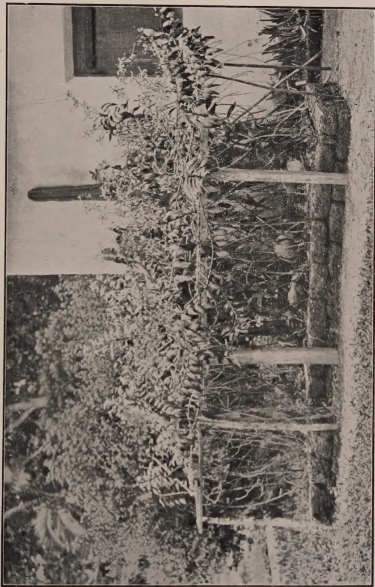
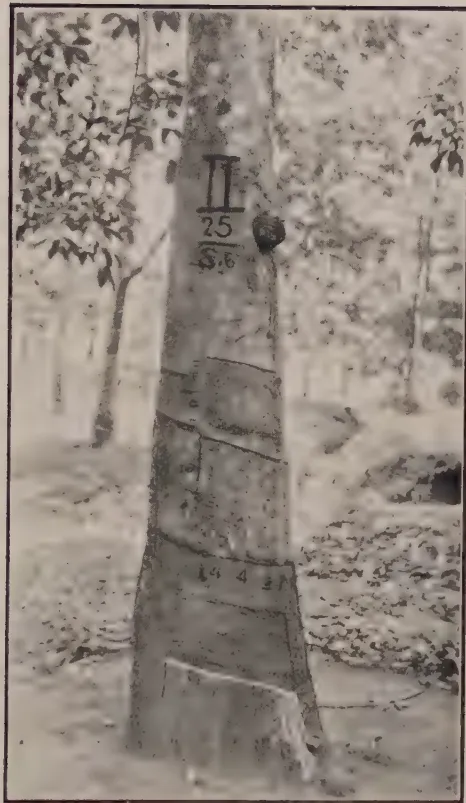
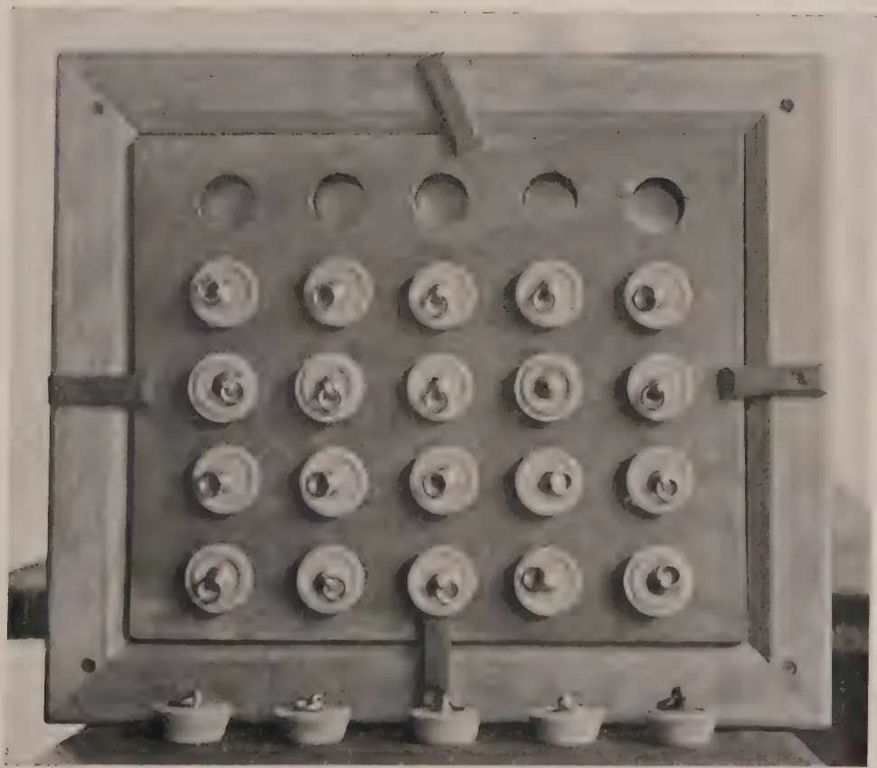
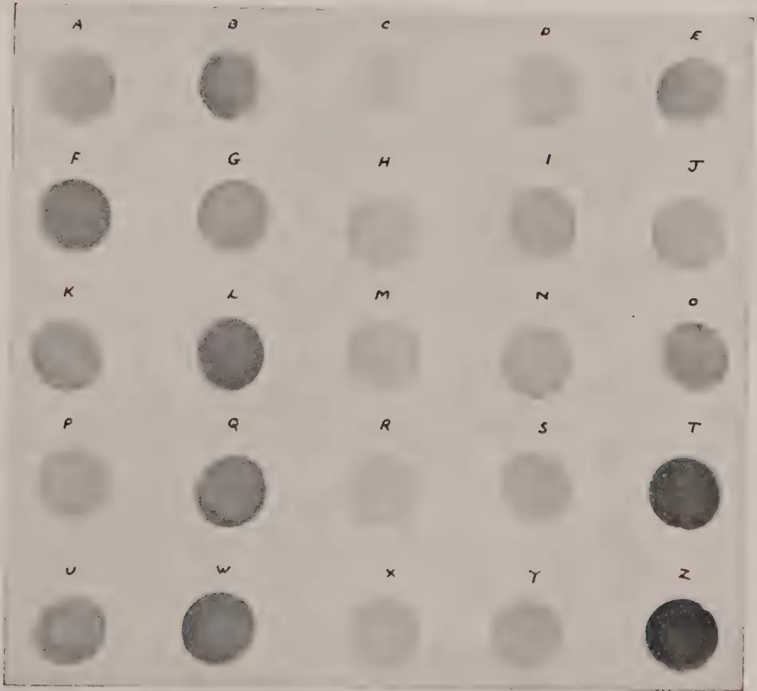
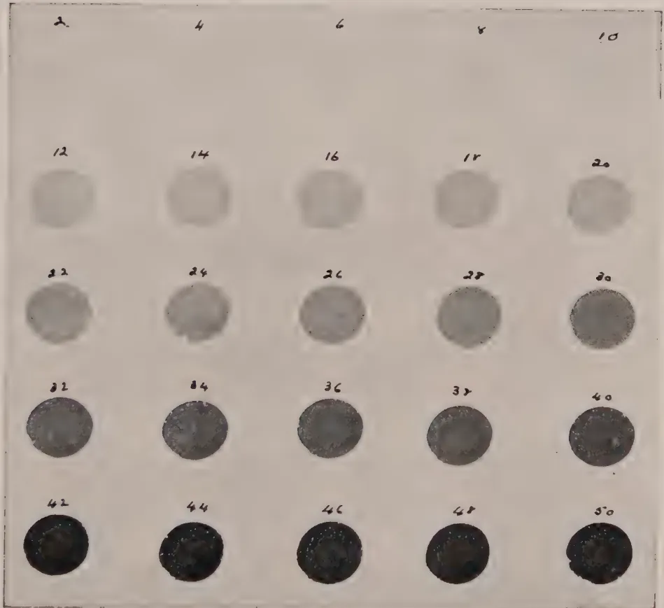
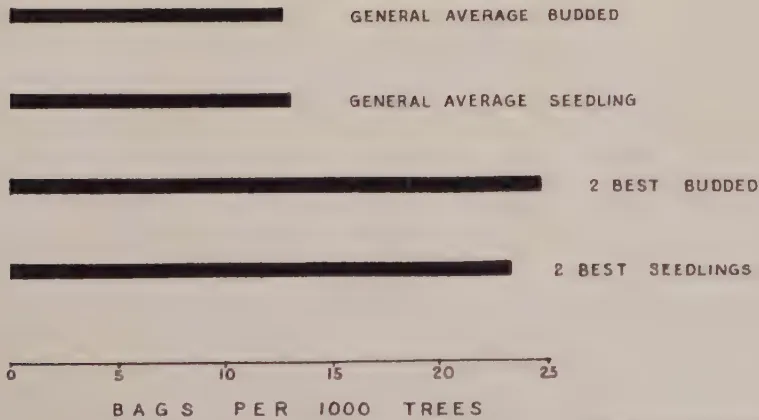
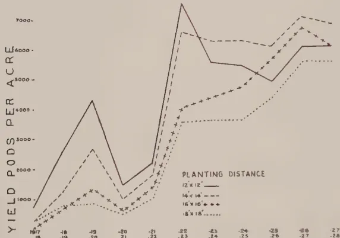
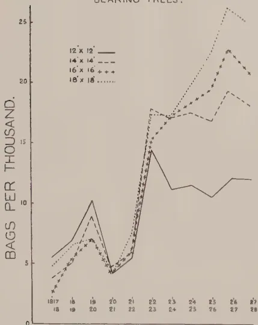
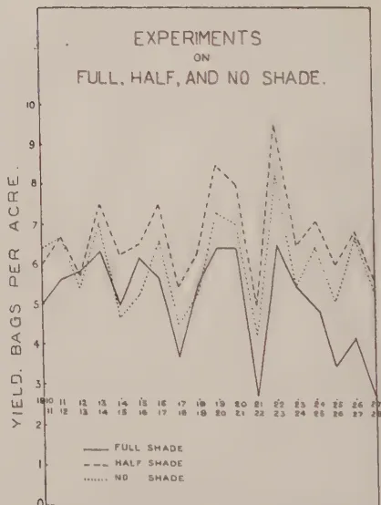

July 1929
IN February of this year a circular letter was sent by the Ceylon Rubber Research Scheme to over two hundred estates which had not supplied information about their high-yielding trees asking if yield records could be kept during the present year. Up to the end of May less than forty replies had been received. Although this unsatisfactory response does not necessarily give an exact measure of the interest taken by Ceylon rubber planters in the discovery and use of superior planting material yet it does appear to give an indication of an attitude which cannot be viewed without alarm.
It is impossible to estimate the relative values of the different factors which will influence rubber prices in the near or more distant future, but there is little doubt that the large plantings of native rubber in the Dutch East Indies will quickly exercise a stabilising effect on prices. It may be conjectured, also, that a really large increase in consumption will depend upon a comparatively low price level. But whatever the future trend of prices may be it is obvious that estates with low production costs will be in the best position. These costs depend almost entirely on yield per acre; the average yield per acre of Ceylon estates is estimated at less than 400 lbs. per acre.
In an interview accorded to The Straits Times Mr. H. Stuart Hotchkiss, chairman of the General Rubber Company and president of the United States Rubber Plantations, the largest estate group in the industry, said of budgrafting:—
We are absolutely convinced of its importance, as the result of many years' work by our scientific staff in Sumatra. We are budgrafting all our new areas. During the course of the next two years we have very substantial areas of budded rubber coming into production, and our small experimental areas indicate a yield of 1,000 lb. per acre. That is on a normal system of alternate monthly tapping.
2It was publicly stated in the Agricultural Division of the Fourth Pacific Science Congress held in Java in May that in Sumatra mixed clones of between eight and nine years old and planted unproved yielded 1,100 lb. per acre and that 200 acres yielded 800 lb. at eight years. These figures are impressive and the fact that the rubber industry has realised the importance of budgrafted material is shown by the acreage now planted. In the Dutch East Indies it is now estimated to be over 100,000 acres (of mixed buddings and selected seedlings or of buddings alone) and in Malaya at least 20,000. It is well known that large importations of budwood, budded stumps and selected seed have been made into Indo-China.
Attention is directed to these facts in the hope of stimulating a more general interest in Ceylon, an interest which so far has been a close preserve of two or three progressive planters.
Even if new land is not available for opening much may be done by rejuvenation either by removing all trees or all but the best five or six per acre and replanting with superior material. Experiments on these lines have been laid down in other countries and it has been found that the proceeds of the very heavy tapping of the year or two years prior to replanting goes a long way in meeting the costs and the temporary loss of revenue. The Department of Agriculture intends this year to initiate such an experiment at Peradeniya.
Rejuvenation implies the use of superior planting material either in the form of budgrafts or of selected or pedigree seed. Seed is available in small quantities; it has not yet been proved but in Java it is in keen demand. Of budded material, the proved clones available have been tested outside Ceylon, but it is intended to include in the tests of Ceylon clones at Peradeniya plots of the better known Malaya, Sumatra and Java clones. budwood of which either exists in Ceylon or has already been ordered.
Fears of poor or uneven bark renewal or of weakness at the junction have proved to be unfounded and it is hoped that estates will now commence to test for themselves the merits of the different proved clones available.
The hybridisation of different clones and the selection from the progeny of still higher-yielding mother trees or the use of the progeny of certain crosses as seedlings opens up tremendous possibilities which should amply repay the extra staff, land and money required to prosecute these researches. Failure to obtain the necessary financial support and land may at this juncture be calamitous.
A report by the Economic Botanist of the Department of Agriculture on the present position of budgrafting and seed selection of rubber in the Dutch East Indies will shortly be available for publication.
3J. C. HAIGH, B.Sc., A.R.C.S., A.I.C.T.A.,
ASSISTANT MYCOLOGIST,
DEPARTMENT OF AGRICULTURE, CEYLON.
It has been found in the course of work on the morphology of the sclerotium of Macrophomina Phaseoli (Maubl.) Ashby (= Rhizoctonia bataticola (Taub.) Butl.) that the strains of the fungus isolated from different hosts may be separated into three groups, the division being based on mean sclerotial diameter in culture. The first group contains those strains with a mean sclerotial diameter of 120 microns or less; strains of the middle group have a mean sclerotial diameter round about 200 microns, while the third group contains those strains whose sclerotia are commonly measured in millimetres and tenths of a millimetre. Arbitrary as this grouping undoubtedly is, it has nevertheless been found to be entirely reliable during a period in which hundreds of cultures have been examined. It must be understood that the basis of classification is the mean sclerotial diameter; the upper limit of the range of sclerotial diameter in the lowest group distinctly overlaps the lower end of the range of the middle group, but the means remain distinct. The distinction is such that with very little practice cultures of the three groups can be distinguished with the naked eye. A full report of this work will be published under the above title in The Ceylon Journal of Science (Annals of the Royal Botanic Gardens, Peradeniya) where it will be shewn that other differences exist, although such differences are not considered sufficient to warrant separation into different species at present.
In the Transactions of the British Mycological Society for 1927 Ashby (1) established Macrophomina Phaseoli (Maubl.) Ashby as the pycnidial stage of Rhizoctonia bataticola (Taub.) Butl. The determination was made on the examination of pycnidia and spores from jute, sesame, pigeon pea and beans and of the sclerotial forms produced when the pycnospores were grown
4on culture media. On two occasions, one recorded in February 1928 (2) and one in the paper to be published, pycnidia of Macrophomina Phaseoli have been obtained in culture; otherwise they have been found only in nature, and in the absence of evidence to the contrary it has been assumed that all sclerotial forms referable to Rhizoctonia bataticola will have as their perfect stage the pycnidial form Macrophomina Phaseoli. These sclerotial forms "range from 50 to 150 microns in diameter in the tissue of herbaceous plants but in the roots of woody plants Small found them up to 0.8 by 1.0 mm. in size; in cultures the variation is from 50 to 200 microns." (1). In Ceylon the sclerotia have been found on more than fifty plants, but the hosts of the pycnidia are two only, beans and sunflower. The Ceylon sclerotia have exhibited the wide range in size quoted above, but have exhibited it in culture as well as in nature. As far as is known at present pycnospores of Macrophomina Phaseoli, from whatever source they were isolated, have always given in culture sclerotia which belong to the lowest of the three groups established in the present work, and it is the writer's conviction that they will always give sclerotia of this group. If this is so, it accounts for the remark of Ashby quoted above: "in cultures the variation is from 50 to 200 microns." The statement was no doubt based on the examination of the sclerotia produced by germination of spores from the various pycnidial forms now gathered together under the new binomial Macrophomina Phaseoli. In view of the grouping established in the present note, it is by no means certain that all sclerotial forms now included in Rhizoctonia bataticola will have Macrophomina Phaseoli as their perfect stage, and in view of this possibility the sclerotial forms are referred to as Rhizoctonia bataticola and the name Macrophomina Phaseoli is reserved for the pycnidial stage.
Cultural and inoculation experiments are described, and some interesting mutations are recorded. It is thought that these may throw some light on the question of the parasitism of Rhizoctonia bataticola in nature.
K. J. ALEX. SYLVA,
ASSISTANT CURATOR,
HENERATGODA BOTANIC GARDENS.
THIS useful, hardy orchid was introduced into Ceylon about 1899 from the Malay Archipelago but its cultivation does not appear to have received any serious attention till quite recently. As an ornamental plant it takes rank with the most beautiful of the orchid tribe, besides being also amongst the largest. Its long branching and rooting stems climb on supports to considerable heights.
Description.—An epiphytic orchid, stem long, with vermiform roots, with thick leathery strap-shaped recurved leaves about 6 by inches. Flowers large, pale green, blotched with brown, in the shape of a scorpion, about inches long by inches wide, borne on branched panicles about 2 to 3 feet long, produced from the sides of mature stems.
Cultivation.—The cultivation of the plant is simple. It thrives best in soil where natural drainage and moisture exist. In the selection of cuttings for planting preference should be given to side or end shoots of mature branches. The shoot should be cut below a node or joint with a sharp knife and should have a couple of roots to each cutting. In no case should the cutting be pulled off the stem as pulling will injure the mother plant. If sufficient cuttings are available they should be grown in the ground. The place selected for their cultivation should be sunny and warm and removed from trees; it should have natural drainage.
A fair-sized bed should be dug about 12 inches deep and filled with a compost of leaf mould, bits of charcoal and porous bricks to which is added a small quantity of earth in the process of filling. The bed when filled and made level with the ground should be surrounded with bricks or cabook stones (the latter are preferable) for the purpose of forming a well over the bed with a depression of 6 to 8 inches. The cuttings should be placed in the depression 12 inches apart and tied to thick stout sticks about 3 feet high to encourage rooting and to prevent shaking by the wind. The depression should then be filled with a mixture consisting of about equal parts of old tree bark, broken crocks or pieces of brick, charcoal, decayed wood and pieces of coconut husk and covering at least a couple of roots of each cutting.
6A durable artificial rough trellis on 3-feet posts over the plants should be provided for their support (as shown in the photograph). Plants grown in this way produce blooms twice a year, from March to June and October to January.
This particular species of Renanthera when once established does not require much attention or watering. The plant should be completely rested after flowering, during which period no water should be given to the roots even if the weather is dry. It will receive sufficient moisture from dew and from an occasional shower. Plants kept in this state of starvation will show tips of flower panicles on the mature stems in the course of sixty to eighty days, when free supplies of water, both at the roots and overhead, become necessary until the flowers are opened. During flowering watering or syringing of plants should again be reduced. This will help to prolong the life of the flowers. The plant is at home at the Heneratgoda Botanic Gardens, 33 feet above mean sea level with a rainfall of a little over 100 inches per annum.

Renanthera (Aracanthus) Mainingayi,
Scorpion or Spider Orchid.
IT was previously shown and confirmed that when coagulum is allowed to remain in the serum from 3 to 45 hours before rolling to crepe there is a progressive decrease in the plasticities of the rubber six months after preparation (Bulletin 49).
Two further series of experiments have now been completed in which the coagulum after keeping for various periods in the serum was converted into smoked sheet. In the first series the coagulant was acetic acid; in the second, acetic acid and paranitrophenol. It was considered that paranitrophenol might retard maturation and therefore reduce variations due to the period for which the coagulum was kept in the serum.
The samples were submitted to two sets of tests. In one, bulk samples were stored at 60°F and submitted to mastication tests at the end of six months. In the other, small pieces were stored for six months under various conditions and submitted to compression tests (without mastication) at the beginning and end of the period of storage.
Mastication tests.—The following are the results of mastication tests on the bulk samples stored for six months at 60°F:—
| Sample No. | Coagulant. | Period coagulum kept in serum. | Number of grindings required to produce fixed rate of extrusion at 85°C. |
|---|---|---|---|
| (hrs.) | |||
| 1385 | Acetic acid | 4½ | 94 |
| 1386 | " " | 17½ | 95 |
| 1387 | " " | 35½ | 95 |
| 1388 | " " | 40½ | 120 |
| 1389 | " " | 55½ | 109 |
| 1390 | Acetic acid and | 4½ | 104 |
| 1391 | paranitrophenol | 17½ | 109 |
| 1392 | " " | 35½ | 108 |
| 1393 | " " | 40½ | 105 |
| 1394 | " " | 55½ | 107 |
Samples 1385 and 1387 required less mastication than samples 1388 and 1389 which were prepared from coagulum kept in the serum for longer periods. The results however are irregular and it is concluded that there is no marked indication that keeping the coagulum in the serum causes smoked sheet to
8become less plastic, as was found previously for crepe. The samples containing paranitrophenol have given very uniform results similar to the average given by samples without paranitrophenol.
Compression tests.—Compression tests were carried out on samples before and after storage for six months (a) at 60°F, (b) at about 40°F, (c) at 60-70°F over water and over calcium chloride.
The following are the results of compression tests on the unmasticated rubber by the de Vries modification of the Ira Williams method after 30 minutes' compression, viz. D30 or thickness in of 0.4 grams under load of 5 kgs at 100°C.
After storage for six months.
| Sample No. | Coagulant | Period in serum. | Before storage. | 40°F (a) | 403F (b) | 60°F | Over water at 60-70°F. | Over calcium chl. ride at 60-70°F. |
|---|---|---|---|---|---|---|---|---|
| 1385 | Acetic acid | 4½ | 154 | 156 | 150 | 161 | 188 | 166 |
| 1386 | " " | 17¾ | 158 | 151 | 155 | 158 | 197 | 175 |
| 1387 | " " | 35½ | 156 | 154 | 166 | 165 | 199 | 185 |
| 1388 | " " | 40¼ | 156 | 155 | 159 | 161 | 195 | 180 |
| 1389 | " " | 55½ | 159 | 163 | 157 | 167 | 195 | 183 |
| 1390 | Acetic acid | 4½ | 151 | 163 | 160 | 156 | 200 | 181 |
| 1391 | and para- | 17¾ | 158 | 158 | 162 | 151 | 192 | 180 |
| 1392 | nitrophenol | 35½ | 155 | 160 | 162 | 158 | 210 | 184 |
| 1393 | " " | 40¼ | 156 | 161 | 160 | 163 | 199 | 186 |
| 1394 | " " | 55½ | 155 | 163 | 165 | 167 | 204 | 182 |
There was little difference in the hardness of the samples before storage.
Samples stored in air at 40°F or 60°F without definite control of the moisture conditions changed very little in hardness during the period of storage, but those stored in a very dry or wet atmosphere at 60-70°F have hardened considerably, the sample prepared from coagulum kept for the shortest period in the serum hardening the least. The samples stored under very dry or very wet conditions therefore have given results resembling those previously given by crepe.
The results show that the conditions of storage, particularly the moisture conditions, may have an important effect on the hardness of unmasticated rubber.
The residue of the bulk samples are now being stored at the Imperial Institute for a further period of six months under various conditions of temperature and moisture and also over oxygen and carbon dioxide.
9Vulcanisation tests.—The following are the results of tests after vulcanisation for 100 minutes at 148°C in the rubber-sulphur mixing 90:10:—
| Sample No. | Coagulant | Period coagulum left in serum. | Tensile Strength. | Elongation at load of 1.04 kgs./sq. mm. | Calculated time of vulcanisation. |
|---|---|---|---|---|---|
| (hrs.) | (lb./sq in.) | (per cent.) | (mins.) | ||
| 1385 | Acetic acid | 4½ | 1580 | 853 | 120 |
| 1386 | " " | 17½ | 1670 | 848 | 118 |
| 1387 | " " | 35½ | 1850 | 832 | 114 |
| 1388 | " " | 40½ | 1840 | 840 | 116 |
| 1389 | " " | 55½ | 1850 | 820 | 111 |
| 1390 | Acetic acid | 4½ | 1460 | 860 | 121 |
| 1391 | and para- | 17½ | 1950 | 840 | 116 |
| 1392 | nitrophenol | 35½ | 1560 | 847 | 118 |
| 1393 | " " | 40½ | 1830 | 824 | 112 |
| 1934 | " " | 55½ | 1950 | 824 | 112 |
There is a small progressive decrease in the time of vulcanisation with the period the coagulum was allowed to remain in the serum. This is possibly due to maturation or to the retention of extra serum substances.
The tensile strengths of the samples are on the whole satisfactory.
The samples containing paranitrophenol behave similarly to the control samples coagulated with acetic acid alone. There is no evidence from these experiments therefore that paranitrophenol is likely to reduce variation. This is not a conclusive experiment on this point, however, as maturation may not be the cause of the small differences observed in time of vulcanisation.
Imperial Institute,
London, S.W. 7.,
February, 1929.
N.B.—It is proposed to repeat these tests.
10J. MITCHELL, A. R. C. SC.,
ORGANISING SECRETARY,
RUBBER RESEARCH SCHEME (CEYLON).
IN connection with the treatment of brown bast advised in Rubber Research Scheme Bulletin No. 48 the question has naturally arisen whether the renewed bark was likely to be more readily affected by brown bast than normal bark. The writer has on several occasions expressed the view that such bark was probably no more susceptible to the disease than normal bark, but owing to the short space of time during which the treatment has been practised in Ceylon it was not possible to make a positive statement.
Recent evidence has, however, been obtained which suggests that this view is probably correct. The treated tree shown in Plate VII of Rubber Research Scheme Bulletin No. 48 has now been tapped for over two years on the third-day system and is continuing to give satisfactory yields and there are no indications of brown bast development.
The present photograph of this tree was taken after slight rain had fallen hence the overflow of latex on parts of the cut but it will be noted that the flow is normal. The superintendent of the estate on which this photograph was taken informs me that many other trees scraped in 1927 are being successfully tapped and that he anticipates that over one thousand treated trees will be in bearing during 1930.

A black and white photograph of a tree trunk, likely a rubber tree, showing several horizontal bands of bark that have been removed. The trunk is marked with several numbers and symbols. At the top, there is a Roman numeral 'II'. Below it, the number '25' is written above a horizontal line, with '5.6' written below it. Further down, the number '144' is visible. The background shows a forest setting with other trees and foliage.Treated tree which has been tapped
for two years since the renewal
of the scraped surface.
R. A. TAYLOR, B.SC.,
PHYSIOLOGICAL BOTANIST,
RUBBER RESEARCH SCHEME (CEYLON).
THE method to be described has been carried out successfully in estimating the effects of various manures on the foliage cover in rubber and can be used to obtain a measure of the effect produced by spraying or manuring against leaf diseases of rubber.
The amount of shade under the trees is estimated by comparing the depth of tint obtained when pieces of photographic daylight printing paper are exposed for known lengths of time, the depth of tint being inversely proportional to the amount of shade and consequently to the density of the foliage cover.
It is essential that the light should be uniform throughout the period of measurement and that the sun should be overhead. The observations should, therefore, be made between 11.30 a.m. and 12.30 p.m. on a bright cloudless day. To obtain a proper estimate of the average depth of shade the observer should, while making the exposures, keep moving at as uniform a pace as possible through each plot as there are always patches of bright light and dense shade in the plots.
To minimise the effect of possible variations in the different sheets in each package of printing paper it is advisable to make one exposure in each block on the same sheet. To enable this to be done a printing frame 12 ins. by 10 ins. fitted with a sheet of plain glass is used. A well-fitting wooden screen is supplied for this frame and held in position by four catches. In this screen a number of circular holes one inch in diameter are bored and are closed by rubber bath plugs. The printing paper is inserted behind the glass in the usual way.
When an exposure is to be made the plug bearing the number or letter of the block of trees to be tested is removed and the arranged time of exposure measured by a stop watch. The plug is replaced immediately on expiry of the period. Well-fitting plugs are essential for success. When all exposures have been made the printing paper can be fixed in the same way as an ordinary photographic print and a permanent record is obtained.
12With Ilford P.O.P. mauve, one minute exposures have been found to be suitable and the following procedure for fixing is recommended:—
| Wash in running water | 5 minutes |
| Fix in 15% hypo | 10 ,, |
| Wash in running water | 2 hours. |
To obtain a numerical value for the depth of tint a series of standards has to be prepared. On the frame used by the writer there were 25 holes allowing 25 exposures to be made without the necessity of changing the paper. The frame was laid flat on open ground at 12 noon and one plug removed every two seconds. When the last exposure had been made the frame was covered and taken to the laboratory and the exposed printing paper fixed by the method described above. The tints on this standard sheet were numbered 2-4-6-8, etc., and were used for comparing the tints obtained by exposures made under the trees. It was found that the tints obtained by exposure to direct sunlight were not exactly the same as those obtained under partial shade. For this reason it is preferable to prepare the standard in ordinary light which should be of uniform and constant intensity during the period of the exposure. Periods of longer duration than two seconds should then be employed. The values obtained have no absolute meaning but provided the exposures are carefully made the results obtained would in the writer's opinion be capable of statistical examination.
Fig. 1. shows the printing frame and the perforated screen with the plugs.
Fig. 2A. shows a sample result obtained on 25 blocks of trees and Fig. 2B. a standard sheet for comparison.
Research Laboratories,
Culloden Estate,
Neboda, 10-2-29.

A black and white photograph of a mechanical device, likely a cipher machine or cryptographic device. The device is housed in a wooden frame with metal latches on the sides and a central vertical handle. The front panel features a grid of 20 circular components arranged in four rows and five columns. The top row contains five circular openings. The subsequent three rows each contain five circular components, each with a small central knob or dial. Below the grid, five small bowls or containers are positioned, each connected to one of the components in the bottom row by a vertical rod.Fig. 1.
This image is a scan of a blank page. The paper has a light beige or cream-colored tint. There are a few very small, dark specks scattered across the surface, which appear to be scanning artifacts or dust particles. No text, lines, or other markings are present on the page.
A 5x5 grid of 25 circular spots, each labeled with a letter from A to Z. The spots vary in grayscale intensity, with some being very dark and others very light.
| A | B | C | D | E |
|---|---|---|---|---|
| Light | Medium | Light | Light | Medium |
| F | G | H | I | J |
| Dark | Medium | Light | Medium | Light |
| K | L | M | N | O |
| Light | Dark | Light | Light | Medium |
| P | Q | R | S | T |
| Light | Medium | Light | Light | Dark |
| U | W | X | Y | Z |
| Light | Dark | Light | Light | Very Dark |
Fig. 2 A.
This image is a scan of a blank page. The paper has a light beige or cream-colored tint. There are a few very small, dark specks scattered across the surface, which appear to be scanning artifacts or dust particles. No text, lines, or other markings are present on the page.
A 4x5 grid of 20 circular objects, likely coins, arranged in four rows and five columns. Each object is labeled with a number above it. The numbers are: Row 1: 2, 4, 6, 8, 10; Row 2: 12, 14, 16, 18, 20; Row 3: 22, 24, 26, 28, 30; Row 4: 32, 34, 36, 38, 40; Row 5: 42, 44, 46, 48, 50. The objects show a color gradient from light gray to dark black, indicating increasing oxidation or age.
Fig. 2 B.
This image is a scan of a blank page. The paper has a light beige or cream-colored tint. There are a few very small, faint dark spots scattered across the surface, which appear to be scanning artifacts or dust particles. No text, lines, or other markings are present on the page. 13THE Department of Agriculture of Trinidad and Tobago has, for close upon twenty years, been engaged on research into some of the fundamental problems of cacao cultivation. The object of this paper is to give a brief summary of the work and of the results.
In the first place it is desirable to give some account of the conditions under which the work has been done. The Department has been fortunate in having had, under its charge, River Estate, a property of some 1,500 acres in area of which about 500 acres are now in cacao. It has thus been possible to experiment on an estate scale and under estate conditions. River Estate was not originally intended to be a cacao experiment station or even a model cacao estate. It was purchased for £4,629 by the Government, in 1897, in order to secure the water rights for a pumping station to supply Port-of-Spain. It was then practically an abandoned sugar estate with a small portion in cacao. The Government leased it out, but resumed possession in 1904, paying £1,300 for the surrender of the lease, and charge of the property was entrusted to the old Botanical Department. The cacao crop then was 182 bags. The cultivation was extended under the "contract" system. Men of the labouring class are allotted a few acres each, on which they plant cacao, shade trees, and the usual food crops—bananas, cassava, tannias (Xanthosoma) which serve as temporary shade for the young cacao. They live on the produce of these minor crops, supplemented often by earnings as labourers on the estate, and when the cacao trees come into bearing the owner takes over the contract paying at a fixed rate (about one shilling) per bearing tree, and less for younger trees. The owner avoids much capital outlay until there is a crop to be reaped, but the results are not always satisfactory and at River much work has had to be done in bringing bad contracts up to a reasonable standard.
Towards the end of 1908 the present Department of Agriculture, in which the old Botanical Department was merged, was created, and River Estate came under its charge. Until 1920 the estate continued to be worked on an advance account, but in that year its finances were included in the ordinary Department estimates. It has been developed to yielding a cacao crop of 1,319, bags in 1927, the record year. In addition some 500 acres have been re-afforested in valuable timber, 35 acres established in grape fruit and oranges (one to six years), 30 in coffee, 12 in other permanent economic crops. Much attention has also been given to providing better dwellings for labourers, extending estate roads, etc. Interest was not charged on the original advances, but by 1915 the estate had repaid to the Government the capital expenditure, and to date has paid into the Treasury some £2,000 more than it has drawn. The value of the property may now be put at about £35,000, the cost of development having been defrayed by its own earnings.
* By W. G. Freeman, B.Sc., A.R.C.S., Director of Agriculture, Trinidad and Tobago, in Tropical Agriculture, Vol. VI, No. 5, May 1929.
14In 1910 a set of manurial experiments was laid out on then conventional lines. Plots of 50 trees each were demarcated in a field of apparently uniform cacao, and manured in various ways, three plots being left as controls. The results as regards manurial treatment need not be discussed now. They are given in a series of reports by J. de Verteuil, the Superintendent of Field Experiments, in the Bulletin of the Department from 1912 to 1917. It was soon obvious that the manure applied was a very minor factor in determining the yield of a plot and this unexpected result diverted attention very early to the study of the cacao tree itself. In following up this line of work the Department entered upon a piece of long range research, to use the popular modern term, which has yielded valuable fundamental results and furnished the cacao planter both here and in other countries with the practical means of economically increasing his production.
Seeking to find the cause of the unexpected result referred to above, a large number of trees in various fields at River, and on eight other estates in the Colony were labelled and records kept to determine the natural yield of plots and individual trees, all unmanured, and under similar cultural treatment in each field. The results were summarized by de Verteuil in a "Report on Estate Experiments, 1910-17." The more important points which were established were the following:—
That the variation in the yields of various plots was due to the relative productiveness of the trees in each plot, and largely dependent on the relative proportion of heavy and poor bearing trees in each plot. That a large proportion of the trees gives less than 13 pods (about 1 lb. of cacao) per annum even in a very favourable year. That other trees are heavy bearers, and that generally speaking heavy bearing trees continue to be heavy bearers, and poor bearing trees continue to be poor bearers.
The task of keeping individual yields was persevered with on a large scale, and records obtained at River for some 14,000 trees over a period of ten years.
In a paper by the writer in 1919 on "Recent Experimental Work on Cacao" detailed figures were given to justify the conclusion that cacao trees can be grouped into heavy, medium and poor bearers, and that generally speaking they maintain these characteristics year after year. Some of the poor bearers are obviously weak or retarded trees, but others are equally as strong and vigorous as the good bearers. Moreover, special cultural and manurial treatment does not produce any fundamental change.
The following records of seven trees in a plot at River, manured for each of seven successive years with a "complete" manure will serve to illustrate this point:—
| Pods per annum per tree | 1911-12 to 1918-19. | |||||||
|---|---|---|---|---|---|---|---|---|
| Tree | ||||||||
| A | 63 | 102 | 81 | 93 | 100 | 135 | 67 | 106 |
| B | 91 | 125 | 123 | 206 | 129 | 191 | 60 | 123 |
| C | 51 | 50 | 44 | 48 | 78 | 45 | 55 | 41 |
| D | 46 | 41 | 44 | 43 | 32 | 32 | 36 | 44 |
| E | 23 | 45 | 33 | 31 | 26 | 26 | 17 | 26 |
| F | 3 | 6 | 3 | 7 | 5 | 25 | 3 | 21 |
| G | 1 | 6 | 26 | 22 | 30 | 12 | 5 | 19 |
There is on the whole an increase in bearing capacity with increase in age, but the poor trees F and G of the two first years are still the poor trees of the last two years, and similarly with the heavy bearers A and B and the meidum bearers C, D and E.
Fig.1.
MEAN YIELD OF BUDDED AND SEEDLING CACAO
![Line graph showing Mean Yield of Budded and Seedling Cacao. The Y-axis is labeled 'PERCENT' and ranges from 0 to 40. The X-axis is labeled 'MEAN NUMBER OF PODS PER TREE TO DATE' and ranges from 0 to 600. Three lines are plotted: 'BUDDED' (solid line), 'SEEDLING' (dashed line), and '4 BEST BUDDED STRAINS' (dotted line). The 'BUDDED' line peaks at approximately 37% yield at 50 pods. The 'SEEDLING' line peaks at approximately 23% yield at 50 pods. The '4 BEST BUDDED STRAINS' line peaks at approximately 19% yield at 150 pods. All lines show a general downward trend as the number of pods increases beyond 200.](8fb99ceedcb176a398beb914419c92dc_3_img.webp)
| Mean Number of Pods per Tree | Budded (%) | Seedling (%) | 4 Best Budded Strains (%) |
|---|---|---|---|
| 0 | 8 | 14 | 5 |
| 50 | 37 | 23 | 8 |
| 100 | 25 | 20 | 12 |
| 150 | 19 | 16 | 19 |
| 200 | 10 | 10 | 12 |
| 250 | 7 | 9 | 11 |
| 300 | 5 | 7 | 8 |
| 350 | 4 | 5 | 6 |
| 400 | 3 | 4 | 4 |
| 450 | 3 | 4 | 4 |
| 500 | 3 | 4 | 4 |
| 550 | 3 | 3 | 3 |
| 600 | 4 | 3 | 3 |
Fig. 2

| Category | Bags per 1000 Trees |
|---|---|
| GENERAL AVERAGE BUDDED | 12 |
| GENERAL AVERAGE SEEDLING | 13 |
| 2 BEST BUDDED | 24 |
| 2 BEST SEEDLINGS | 23 |
Block by Survey Dept. Ceylon 1929.
Fig. 3.
EXPERIMENTS
ON
DISTANCE PLANTING

Yield Pods per Acre
PLANTING DISTANCE
| Planting Distance | 12 x 12" | 14 x 14" | 16 x 16" | 18 x 18" |
|---|---|---|---|---|
| .18 | 800 | 400 | 300 | 200 |
| .19 | 1200 | 600 | 400 | 300 |
| .20 | 1500 | 800 | 500 | 400 |
| .21 | 1000 | 500 | 300 | 200 |
| .22 | 1200 | 600 | 400 | 300 |
| .23 | 7000 | 6500 | 1200 | 1000 |
| .24 | 5500 | 6000 | 1500 | 1000 |
| .25 | 5000 | 6000 | 1800 | 1000 |
| .26 | 5000 | 6000 | 2500 | 1500 |
| .27 | 6500 | 6500 | 3500 | 2000 |
| .28 | 6000 | 6000 | 3500 | 2000 |
Fig. 4.
EXPERIMENTS
ON
DISTANCE PLANTING—
YIELD PER THOUSAND
BEARING TREES.

Bags per Thousand
| Planting Distance | 12 x 12" | 14 x 14" | 16 x 16" | 18 x 18" |
|---|---|---|---|---|
| .18 | 5 | 4 | 3 | 2 |
| .19 | 7 | 6 | 5 | 4 |
| .20 | 10 | 9 | 7 | 6 |
| .21 | 4 | 4 | 4 | 4 |
| .22 | 14 | 17 | 17 | 17 |
| .23 | 11 | 17 | 17 | 17 |
| .24 | 11 | 17 | 17 | 17 |
| .25 | 11 | 17 | 17 | 17 |
| .26 | 10 | 18 | 18 | 18 |
| .27 | 12 | 19 | 22 | 25 |
| .28 | 12 | 18 | 21 | 25 |
Fig. 5.
EXPERIMENTS
ON
FULL, HALF, AND NO SHADE.

Yield, Bags per Acre
| Planting Distance | Full Shade | Half Shade | No Shade |
|---|---|---|---|
| .10 | 5 | 6 | 6 |
| .11 | 5 | 6 | 6 |
| .12 | 6 | 6 | 6 |
| .13 | 6 | 7 | 6 |
| .14 | 5 | 6 | 5 |
| .15 | 6 | 6 | 5 |
| .16 | 6 | 7 | 6 |
| .17 | 4 | 6 | 5 |
| .18 | 5 | 6 | 5 |
| .19 | 6 | 8 | 6 |
| .20 | 6 | 7 | 6 |
| .21 | 3 | 5 | 4 |
| .22 | 6 | 9 | 6 |
| .23 | 6 | 6 | 6 |
| .24 | 5 | 7 | 6 |
| .25 | 4 | 6 | 5 |
| .26 | 3 | 7 | 6 |
| .27 | 4 | 6 | 6 |
| .28 | 3 | 5 | 5 |
Block by Survey Dept. Ceylon 1929
15Concurrently with these investigations, data were collected to determine the proportion of poor bearers which normally occurred on cacao estates in the Colony. In a report for 1913-14, de Verteuil gave the following analysis of trees in a field at River Estate from three years' records:—
| Yield per annum | Per cent. |
|---|---|
| 0—12 pods | 23 |
| 13—25 ,, | 20 |
| 26—50 ,, | 30.4 |
| 51—75 ,, | 15.9 |
| 76—100 ,, | 6.0 |
| over 100 ,, | 4.7 |
Two years later he supplemented this by records from three years' observations on three private estates in Trinidad and one in Tobago. For the two lower groups these showed:—
| Trees Bearing. | |||
|---|---|---|---|
| 0-12 pods Per cent. |
13-25 pods Per cent. |
||
| Estate A | ... | 51.8 | 22.0 |
| „ B | ... | 40.8 | 21.6 |
| „ C | ... | 31.1 | 20.6 |
| „ D | ... | 12.6 | 17.0 |
Estate D, Roxburgh, Tobago, stands out prominently. The owner had planted most of his trees himself from carefully selected seed. The other estates give the results of ordinary contract planting.
The data show the presence on estates in the Colony of anything from 20 to 50 per cent. of very poor bearers, yielding not more than 1 lb. of cacao each, and about another 20 per cent. giving below 2 lb. each. These figures are sufficient to account in great measure for the poor yields per acre so commonly obtained.
Having established that there are natural heavy and poor bearing cacao trees, and that a large proportion of the latter are normally present on cacao estates, the question naturally arose as to how this condition of affairs could be improved. In the crop year of 1919-20 all the trees in a block of 3,000 in field 2 at River Estate, which had a lower average than 18 pods per annum were removed and replaced by seedlings or budded plants from known heavy bearers. In 1924-25 the plants used for replacement began to come into bearing. Taking as an example seven of the best developed of these seedlings, they gave last season 26 lb. of dry cacao, in place of only 3 lb., the average yield for seven years of the poor bearers they have replaced. In other words with a very moderate expenditure and the loss of an almost negligible crop for five years, the yield of a group of trees has been multiplied nearly nine times. Such work carried out on a large scale would have a very marked effect on the cacao production of the Colony. It is of importance to stress the fact that it is quite practicable because the opposite view has quite recently been expressed by C. A. Barber who, in discussing this problem of the poor bearer, says: "The evil is very difficult to remedy, for one cannot replant; it is idle to expect a seedling to survive when surrounded by a plantation of mature trees . . . . The only possible way of improving these poor bearers would appear to be by grafting: they cannot be simply cut out, because of the injurious influence of the sun on the soil and of the wind on the other trees."
16When experimental work to test the practicability of successfully replacing the poor bearer was started there were no data available to show whether heavy bearing was an hereditary quality or not. It was assumed on general grounds that it would be of advantage to use the progeny of selected heavy bearers, and on this same assumption all the plants sold to planters by the Department have been raised from heavy bearers. There was also the possibility that to secure the transmission of heavy bearing qualities it might be necessary to resort to means of vegetative propagation. The method in vogue for cacao was inarching or grafting by approach, which was too expensive for work on a large scale. The budding of cacao had been accomplished but had not reached the stage of an economic proposition for estate purposes. In 1913 the writer initiated Departmental work to test the practical possibilities of the method, with successful results through the efforts of J. C. Augustus, and J. de Verteuil as described in 1914 and 1916. In 1914 an experiment was started at River Estate to test the comparative value of the progeny—seedlings, budded plants, and grafted plants—from 28 selected heavy bearing trees.
Six plots of one acre each—280 trees to the acre, planted 12 feet by 12 feet were laid out with ten plants in each from each of the 28 selected parents, the progeny of each parent occupying a similar position in each plot. Two plots contained seedlings, one acre with permanent shade trees and one without. Three plots contained budded plants, two acres with shade and one without. One plot was of grafted plants with shade.
The trees began to bear in 1917-18 and since then the number of pods borne by each tree has been recorded. In 1924 S. C. Harland, then Professor of Botany at the Imperial College of Tropical Agriculture, wrote a brief paper summarizing the conclusions which could be drawn from the data then available. Last year he kindly analysed the results to the end of the crop year 1927-28.
In figure 1 Harland shows the mean yield of the budded and seedling plants during the whole fruiting period, and in figure 2 the mean results for the last two crops of the general average of the budded and seedling plots, and of the budded and seedling progeny, from the two best parent trees in each series.
The general conclusions at which he arrives are indicated by the following quotations:—
“A heavy bearing tree may transmit heavy yield to its budded offspring. On the other hand it may absolutely fail to transmit and may give rise to trees which are much worse than the average. There is no method of telling whether a tree will transmit heavy yield either to its budded or seedling offspring except by testing it.”
“It has been shown at River Estate that it is possible to use supplies to replace poor yielders on estates provided that the supplies are of fair size when they are put in. It is recommended that the following types be concentrated on:—
Budded Nos. 1480 and 2190.
Seedlings Nos. 407 and 969.
“These may confidently be expected to give an increase over ordinary trees of more than 60 per cent.”
Work on similar lines was initiated by the Gold Coast Department of Agriculture in 1914, and a summary of the results obtained so far recently appeared. The occurrence of trees which are consistently high bearers has been ascertained, and it is stated that “the next step is the propagation of
17progeny of the selected plants and their careful trial by the Department. It should not be forgotten that the high yields of these plants may not be inherent, but may be due to specially favourable situations in the field, and that trial of the second generation is therefore necessary."
The results of this trial will be awaited with interest. Meanwhile, for the first time in the history of cacao, so far as the writer is aware, the planters in Trinidad and Tobago have available for their use trees which have been proved to transmit to their progeny their own heavy bearing qualities.
Many thousand seedlings raised from the best bearing trees at River, have been sold to estates in the Colony. The mode of selection has been modified with increasing knowledge.
At first there were no data at all of the yield of the parent trees. These plants were propagated only from known heavy bearers. Now the stage has been reached of being able to propagate from heavy bearers known to be good transmitters of this important characteristic.
Another question to which a definite answer is necessary in helping to solve the problem of how to get the most cacao from a given area of land, is: What is the best planting distance? In Trinidad the most common spacing is 12 feet by 12 feet, although wider spacing is not infrequent. To put the matter to a test, four plots of one acre each were planted in 1913-14 at River Estate at respectively 12 feet by 12 feet, 14 feet by 14 feet, 16 feet by 16 feet and 18 feet by 18 feet. Records have been kept of the yield of each tree. The graph in figure 3 shows the yields of the four plots from the first bearing in 1917-18 to the close of the crop season of 1927-28, expressed as pods per acre. Division by 1,815 (11 pods to 1 lb. of cacao in this case, and 165 lb. to the bag) will convert the yields into bags per acre. It will be seen that for six years the 12 feet by 12 feet plot gave the greatest yield, followed by the others in order. The following year the 14 feet by 14 feet plot took first place which it still retains, and two years later the 16 feet by 16 feet plot also passed the 12 feet by 12 feet. In 1927-28 the 16 feet by 16 feet had a setback for some unknown reason.
For the year 1927-28 the yields per acre were:—
| Planting Distance. | Bags per Acre. |
|---|---|
| 12 feet by 12 feet | 3.3 |
| 14 feet by 14 feet | 3.7 |
| 16 feet by 16 feet | 3.3 |
| 18 feet by 18 feet | 3.0 |
For the period of eleven years since bearing commenced the total yields have been:—
| Planting Distance. | Total yield 11 years. Bags. |
|---|---|
| 12 feet by 12 feet | 25.5 |
| 14 feet by 14 feet | 25.5 |
| 16 feet by 16 feet | 19.4 |
| 18 feet by 18 feet | 16.1 |
The 14 feet by 14 feet plot although at first surpassed by the 12 feet by 12 feet is now giving more cacao per acre, and has also given just as much during the total period of eleven years. In figure 4 the results are presented per 1,000 bearing trees, from which it is seen that whilst for a very few years the more closely planted trees yield the most, this advantage is soon lost. Since 1922-23 the 12 feet by 12 feet plot has declined, the
1814 feet by 14 feet plot has made but little progress, whilst both the 16 feet by 16 feet and the 18 feet by 18 feet have continued to advance, disregarding the probably temporary drop in 1927-28 which was a comparatively poor crop year throughout the estate.
The experiment has not been continued long enough to justify definite conclusions but having regard to the appearance of the wider planted trees, and their continued development in size and bearing capacity, it seems probable that after a few more years the maximum yield per acre will be given by the 16 feet by 16 feet or possibly the 18 feet by 18 feet trees. Should this prove to be the case, wide planting can be advocated because 10 or 15 years is a very short period in the life of a cacao tree. It does not follow that there need necessarily be any loss of revenue during these years that the wider planted cacao is giving less per acre, because coffee could probably be grown successfully as a catch crop and allowed to remain until it is gradually smothered out as the cacao trees develop.
When a new plantation of cacao is being established, banana, cassava, &c., are used to give protection to the young plants. These are usually called "minor" or "ground shade" and are universally regarded as essential. In addition certain trees are frequently planted at regular intervals to serve as permanent shade trees to the mature cacao. The majority of the trees so used are leguminous, species of Erythrina, Gliricidia, &c., and the selection of these particular trees was made very early in the history of cacao cultivation. The question of shade, i.e., permanent shade, has long been a controversial one, and the advocates of diametrically opposed views have no difficulty in finding ample data to support their respective cases. One thing seems certain. The effects of varying degrees of shade are not directly due to variations in the amount of sunlight to which the cacao trees are subjected. Shade trees act partly as overhead wind breaks and their effect in this particular can be compensated for in other ways. The degree of shade also apparently has a direct influence in determining humidity and in consequence the incidence of certain diseases such as black pod due to Phytophthora Faberi.
Shade trees which usually have a vigorous and far-reaching root system compete with the cacao trees for available plant food and also water. The problem is a complex one in which it is difficult to separate the various factors. In order to endeavour to obtain some actual facts of the effects of growing cacao under varying degrees of shade under the conditions at River Estate, experiments were started in 1910. In one of these three adjacent blocks of cacao in one field were marked out. Each block contained 500 trees planted 15 feet by 15 feet, i.e., a little over two acres, of cacao then about 40 years old. In one block all the shade trees and in another half the shade trees were removed, while the third was left undisturbed. These blocks are described as No Shade, Half Shade and Full Shade. Until three years ago when some manurial experiments were initiated in each of these blocks, they received no special cultural or other treatment, and what they have received since then has been identical in each block. The pod records have been kept for each tree since 1910, and the total yield in bags per acre computed from these. The results for the period 1910-11 to 1927-28 are shown in figure 5.
The Full Shade in 1910-11 had a yield of 5.1 bags per acre; has ranged between 2.6 and 6.6 bags, and shows an average over the 18 years of 5.06 bags. The Half Shade began in 1910-11 with a yield of 6.0 bags; has ranged between 4.9 and 9.5 and given an average yield of 6.7 bags. The No Shade, started in 1910-11 with 6.4 bags; has ranged between 4.3 and 8.2 and given an average of 5.96 bags.
19The Half Shade cacao throughout the experiment appears to exhibit greater adaptability to varying seasonal conditions particularly as compared with the Full Shade. Its crops reach a higher level in the good years and do not sink so low in the bad years. The No Shade keeps fairly consistently an intermediate position. The Fully Shaded cacao usually has a short cropping period, from about November to January, the worst months for black pod disease. In the Half and No Shade cacao the crop is more prolonged, and the incidence of black pod is lower. In the figures used for the graph the performance of the Full Shade is flattened, because pod records have been kept, and mature black pods thus included, although of course they have been gathered to be handled separately and produce a cacao of lower commercial quality which is disposed of for local purposes at a low price.
The general conclusions which have been drawn from this experiment are that the lightly shaded cacao gives the greatest yield per acre, that the crop is borne through a longer fruiting season which makes it easier to handle and both lightly shaded and no shade cacao have a much lower incidence of black pod disease.
Similar results have been obtained over larger areas at River Estate where shade has been gradually reduced and where necessary protection from wind provided by planting mahogany trees along the tracts between the cacao fields. Work on these lines forms part of the general practice and advice of the Department, due regard being paid to local conditions.
It would extend this article unduly to enter into a detailed discussion of methods of tillage and manuring. The work at River started with manurial experiments and in the reports by de Verteuil already referred to it will be found that in very few cases were the results financially profitable. More attention was then given to tillage and, passing through a stage of ordinary forking, L. Scheult, Superintendent of River and Cacao Agronomist, devised a system of trenching. Continuous shallow trenches, about 2 feet wide and 16 to 18 inches deep are dug midway between every row, or every other row of cacao trees. In heavy soils their ends open into the main drains to avoid any possibility of water-logging. The trenches are filled up with the cut-up portions of shade trees removed, weedings, hedge trimmings, etc., then a dressing of pen manure, 15 to 20 tons to the acre if obtainable, and finally covered with the earth removed in making the trench, so that the result is a series of raised mounds which gradually sink to the original level. The programme is to do this work field by field, about once every five years. The results have been uniformly good, as shown not only by increased crops, but in increased resistance to the attacks of such a pest as thrips, to diseases such as Algal disease (Cephaleuros Mycoides), etc. The beneficial results are in many cases immediate and striking and they are also lasting.
There is in the minds of many planters a strong prejudice against any disturbance of the roots of the cacao tree, and even quite recently the same view has been expressed in publications by scientific writers, without, however, the presentation of any supporting data. In practice at River Estate the bad results hypothesized by these planters and writers have not occurred, and there is also the experience of Grenada where intensive cultivation, including thorough forking, and the digging of pits which entail root pruning has long been practised with very satisfactory results.
The objects to be aimed at in cacao cultivation are apparently sufficient drainage, tillage and incorporation of organic matter to permit better aeration of the soil, make more uniform its water holding capacity, and
20encourage a deeper root system. By these means the health and vigour of the trees are increased, resulting in great crops both directly and indirectly by greater resistance to some of the principal diseases and pests.
In this brief account of some of the principal lines of work which have been prosecuted at River Estate for now close upon twenty years, it will be recognised that the main objective has been increased production per acre. At first this was doubtless the case although not definitely expressed.
In 1919 in giving a summary of the work to the Agricultural Society at River the writer pointed out that the experiments on cacao could be made with two objects in view:—
In 1923 at a similar meeting held during the period of unremunerative prices due largely to the competition of cheap supplies from other sources, I put the position in these words:—
“To enter into successful competition two courses seem open:
Again in 1928 dealing with the same question, the difficulty of making a fundamental change in quality was pointed out. Cacao is not a short period crop like wheat, cotton or sugar-cane in which one variety can be replaced by another. It is a long period crop and a large area under mature cacao represents heavy capital expenditure. Even the utilization of a choicer variety for new plantings on an estate would mean but little improvement, as the produce of an estate is in practice bulked. It would be very difficult to cure and market one portion separately, as can be done with a particular variety say of citrus or mango.
In practice, therefore, the owner of an established cacao property is restricted to making the best of such cacao as he has. He can improve quality within certain limits by picking only ripe pods, fermenting properly, taking care that the cacao is well dried, and graded, but he cannot by any wave of a wand produce a Criollo cacao from Forastero.
Work has been done at River and elsewhere in converting trees by budding. Basal suckers are desirable and suitable ones are not always easy to obtain. In any case it entails the loss of the crop from the existing trees and so is usually not within the means of the planter unless he has other sources of subsistence.
This being the case his efforts must primarily be directed to increasing his production at the lowest possible cost, and maintaining as high a standard of quality as is practicable for the variety of cacao he has under cultivation. The work at River has demonstrated some ways in which this can be done. It has proved the existence of natural good and bad bearers, that there are large numbers of the latter on all estates, also that heavy bearers can be selected which transmit their heavy bearing characteristics to their progeny, and that these can be used for new plantings or the replacement of poor bearers with profitable results. The results of the distance planting experiments indicate that an alteration in the conventional distance, so far as Trinidad is concerned, may also lead to a larger production per acre. Similarly, the work on shade requirements and cultural treatment point to the same conclusion, not only as regards an actual increase in crop but by minimizing the losses due to some of the principal diseases and pests.
21TROPICAL agriculture differs from agriculture as it is practised in temperate climates in general and in England in particular in so many respects that the farmer brought up to the latter conditions is compelled to adjust himself to a new orientation when he turns to the former. This difference lies not merely in the practice of agriculture through differences of crop and through differences in the response of the soil to treatment under the very different conditions of temperature and rainfall; it lies equally in the economics of management and production. Diverse as the tropical land systems are, they have nowhere assumed that intricacy which is characteristic of such countries as England and is the product of centuries of legal precedent. Both the practice and economics of tropical agriculture are, relatively, in a state of flux and capable of being moulded in directions favourable to production. In this lies its opportunity for it may be moulded in a manner English agriculture cannot owing to the rigidity which age has imparted to the system, to take full advantage of the newer teachings of science and economics which are of recent growth and the outcome of research.
The importance of research in its application to agriculture in general, including tropical agriculture, has not lacked recognition. The output is, in fact, so great that difficulty is experienced in keeping in touch with it in all its latest developments. But it may be questioned whether use of this output is being made to the full. The reasons are various; on the one hand, the development of the tropics has been largely the work of business men and financiers to whom the more kindly conditions have readily yielded a rich harvest. Profits to those early in the field have been generous, as they were to the early industrialists, and the need for the refinements which follow the application of technical knowledge was not patent. But there is the same tightening up in process, both in tropical agriculture and in industry. The exhaustion of virgin soils combined with increasing competition is gradually demanding greater technical skill on the part of the producer, and a change is in process which is only brought about by economic pressure. On the other hand, control of research has tended to concentrate in the hands of bodies which have not the direct personal incentive of the producer as their driving force. Chief of these bodies are endowed institutes, government departments and research associations. Even in the latter, in which the personal interest is more direct than in other forms, there is not that intimate association with practice which exists in the research department of a business unit. Both conditions tend towards a divorce between practice and research, to the detriment of both: and this tendency is emphasised by the very human desire, on the part of the producer, to leave alone a subject of which he understands little, and, on the part of the research worker, to follow up those lines of work which interest him most, lines which, in the majority of cases, lead him to the more general aspect of a problem, and away from the more special aspect. In both cases it is the conditions, rather than the
* By H. Martin Leake, Sc.D., F.L.S., in Empire Production and Export, March and April, 1929.
22individual, which are at fault, and it is in the conditions that a remedy must be sought if research and practice are to pull their full weight in harness together.
Tropical agriculture is faced with no new problem, and if, in what follows, attention is mainly directed to modern industrial methods, rather than to those of modern English agriculture, for a precedent aid for a study of the conditions under which research and practice will go best in harness together, it is because British industry is solving the same problem in a way British agriculture, owing to the economic trammels which its history has wound about it, cannot. Industrial research, that is research with the express object of serving an utilitarian purpose, as opposed to pure research from which utilitarian results of supreme importance have arisen but in a fortuitous manner, as a recognised and vital component of industrial organisation, is of comparatively recent origin, a matter of little more than the last quarter of a century. Its history is well known and its experience readily accessible, lying as it does within the memory of the present generation. It owes its present recognition to the same forces that are now beginning to make themselves felt in tropical agriculture. Economic pressure, the result of competition under the more stabilised conditions established after the first flood of industrial revolution had spent itself, has demanded greater efficiency as the price of success. And the key to greater efficiency has been found in the better understanding of the principles underlying production.
The crux of the economic problem underlying the organisation of industrial research is finance. While the importance of research to industry is beyond argument, for modern civilisation is in being only as the result of research, the uncertainty attaching to the conclusion of any work directed to the solution of a set problem is well recognised. Research requires the financial methods of insurance, for the wider the net is cast, the greater the chance of gathering in the fishes. The set problem may be to catch a sprat, but the bag may be a whale, sometimes even a bit of drift wood. It is not, therefore, the plaything of the small industrial organisation with strictly limited financial resources.
In the past industrial research has been conducted by means of endowments, a method more widely used in the domain of pure research and education; by Government agency; by trade associations, subsidised or not by Government, or by departments within the industrial unit or company. These are named in the approximate ascending order of degree in which control is vested in the hands of those who will derive benefit from the results obtained. The more indirect this control, the greater will be the scope for play of those forces which tend to a divergence between research and practice, and which have been outlined above. Undoubtedly, the most economic form of industrial research is that which is conducted by the unit of industrialisation, the company. But this conclusion carries with it certain corollaries. It has been noted that research, by its very nature, involves financial methods suited to insurance; involves, that is, large units. It is noteworthy that Lord Melchett, in a recent exposition of the process of rationalisation, includes this positively among the benefits "for the larger company can afford to risk an amount to meet unforeseen obstacles which would bankrupt an ordinary business." And what is research but organised meeting, often in advance—to use an Irishism—of unforeseen obstacles? Rationalisation on these grounds alone, as distinct from its further, and, perhaps primary objects, the better correlation of supply and demand, appears justified, and the only manner in which the economic pressure of competition can be met.
23Research associations organised on a trade basis have received much encouragement and support from Government since the War. They may be considered an adequate means of financing research; their efficiency in achieving the objects for which they were instituted is a separate consideration. They have been in operation for a period sufficient for opinions on their utility to crystallise. Here is the conclusion of the chairman of one of these research institutes:—
A closer alliance between science and technology was needed if progress was to be made in the mills. Accordingly, the organisation committee had agreed to release some of the younger trained staff for service in the industry if any of the members applied for such assistance. There was the more necessity for the introduction of a larger number of scientifically trained men in the mills because it was unlikely that future discoveries could be brought to the point of economic production in the institute which could only point the way and do the laboratory work.
There is here no questioning the value of the work of the institute, but there is a very distinct opinion that the conversion of that work into mill practice falls short of what the effort might and would under more favourable conditions yield. It is a recognition that the conditions of a research institute do not fully counteract the inevitable tendency for research and practice to drift apart. He too turns to rationalisation as the cure for this tendency, for he says:—
Yet I am convinced that for the rapid development of the industry larger and larger groups are necessary, if for no other reason than they could employ men of scientific training.
It is hoped that there is nothing in what has been written above which can, or will, be taken to belittle the work of the research associations, or, in fact, of any institutions engaged in research however they may be organised. They are serving an invaluable purpose, both in the work they are doing and, perhaps as important, in building up a body of scientific men trained in an industrial outlook. But there is still a long way to travel before research finds that niche in the industrial organisation in which its capacity to solve the problems with which industry is faced can be most effectively employed. It is as a factor within the large industrial organisation that results from rationalisation, and not as a distinct unit only loosely bound to the industrial machine, that research will find its fullest scope.
The history of tropical agriculture offers many points of similarity with the history of industrial development. If that history covers centuries in both cases as in the plantations of the West Indian Islands and in the early industrial companies in England, industrial development has forged ahead in its later development. The change dates from the industrial revolution, in full flood a century ago, in the one case; in the other, it is a matter of little more than a quarter of a century. The enormous expansion in tropical production which has taken place in this period, till production in many cases at times exceeds demand, has led to competition with an associated fall of prices which compels close scrutiny of the costs of production and the adoption of the latest improvements. Tropical agriculture is passing through the same phases as those through which industry has passed, and it has reached the stage when the prize no longer falls to the first in the field, but to the best mounted. History is, in fact, repeating itself. As with industry, rule-of-thumb is no longer a sufficient guide and research finds its place as a guiding factor for improvement.
24Thus far the proposition has received general recognition. All tropical colonies and dependencies have devoted considerable energy to the study by research of the problems of production. And when the means by which financial provision is made are considered the same methods are found; endowment, Government agency, research associations and research departments within the business unit or company. In recent years there has been a tendency for a fifth agent to arise, the consumer or provider of agricultural essentials has entered the lists. But it is in the relative amount of energy contributed by these various agencies that the main difference lies, for the preponderating share is provided by government. Thus the major activities of research are carried out under conditions which, from their very nature, tend to divorce practice from theory. They are not the conditions under which the maximum will accrue from a given effort.
This is the stage at which the employment of research in tropical agriculture has arrived, and, large as have been the results obtained, it cannot be said that research has won for itself an undisputed field; the difficulty experienced in securing the necessary financial provision for research undertakings is sufficient indication that this is so. If industrial research has a long road to travel, it has at least established a secure position for itself. May not tropical agriculture, in following the same path, learn something from that experience? And that lesson lies in the recognition that, unless closely linked together as they will be within the business unit, research and practice will inevitably lie apart. Rationalisation of tropical agriculture must follow, if only to secure this advantage.
It will be well to follow up the implications of this conclusion. Agriculture, if the cattle industry be omitted, is the production of economic plants, and it is concerned with the relationship between these in all their variety and the soil and climate in all their different aspects. One of the first lessons the agriculturist learns is the need of rotations, the undesirability, even in cases the impossibility, of growing one crop continuously. Yet on what basis is tropical agriculture usually organised? It is a basis of a single crop. Even where the business unit is large and the produce of more than one crop handled, it will frequently be found that the crops themselves are localised and in no sense serve the function or rotation to each other. A condition where eighty, or even ninety, per cent. of the cropped area is under a single crop, leaving only a mere fraction for other rotational crops and fallows, is fundamentally unsound. It is unsound agriculturally, and it is unsound economically. Superimposed on the trade cycles which form a recognised feature of industry, and which are equally apparent in agriculture, are the seasonal influences which are largely beyond the control of the farmer and planter. Inordinate fluctuations consequently characterise the balance sheets of a concern based on a single crop.
But the matter does not end here. Many of the problems underlying plant growth are common to all crops; the problems concerning any particular crop are frequently specialised cases of more general problems. Much of the work affecting a particular crop has an application of a much wider bearing. Efficiency, or the economic employment, of research demands that the field over which it ranges shall not be too restricted or the aim too closely defined. Only with a wide field will the results find their appropriate application. Both demands arise from the similarity existing between research and insurance, of which the essence is that the net shall be cast wide.
25To anyone with experience of tropical agriculture another aspect will occur, that of personnel. No one can be but struck with the paucity of trained research officers in the employ of private companies interested in tropical agriculture. Looked at from the point of view of the student who has to think of his future, the openings offering appear to offer little prospect; little in the present, for the pay of such posts as are available is rarely attractive, and little in the future for advancement. Even the more secure field of research under government has proved none too successful either in attracting the best men or in building up a contented service, for the recent schemes contemplate, besides an improvement in prospects to hold men in the service, a system of probationary studentships to attract men to the service. Research has, in fact, ceased to be mainly a hobby for those to whom material success in this world offers less attraction than the puzzling out of the conundrums of nature. Economic research has become a profession, and if it is to attract the best brains these must be drawn away from competitive fields of labour by the accepted business method of attractive conditions. And this is what a rationalised industry can do. It is one of the advantages that Lord Melchett claims for rationalisation that a large scale organisation can attract the best brains. It is true the army of experienced men is small at present; supply is regulated by demand and demand, in the past, has been fickle. But this need not be so. There is no room for argument as to which came first, the fowl or the egg. The fowl, in the shape of demand, must come first; the egg will certainly follow.
Rationalisation is the one means of weaving research into the web of tropical development under those favourable conditions on which it depends for success, a sufficiently wide field, a close contact with practice and a sufficiently attractive reward for service. But it will differ from rationalisation as understood in industry in more than one respect. A rationalised unit will deal with a wide range of products for, unlike much industry, sound agriculture demands variety, the variety given by rotations. It will cover many countries for climate is a local phenomenon and an adverse season will affect adversely to a greater or less extent all production in the locality. So may, to quote Lord Melchett again, "the success of one section be used to finance another section." Any business subject to large vicissitudes is compelled to cut its cloth, in the matter of fixed charges, to the period of depression, and the provision for research, once made, becomes a fixed charge. The holding company, with subsidiaries embracing interests in a wide variety of products, and with a range extended over the globe offers the most favourable conditions for research and, because returns will be equalised, the surest means of financing such work.
A review of research in tropical agriculture as now conducted would seem to point to the same conclusion. Research is, perhaps, most highly organized in the sugar industry; it may even be claimed that it has gone so far that stabilisation has set in. But it will be noted that within this industry it is in the factory, where the problems are of an industrial nature that this progress has been made. Within any modern factory differences of a fraction of a per cent. in the recovery of sugar are the subject of close enquiry. Differences of 50, 100 and even higher per cent. are common in the field, but do not call for the same close enquiry. They are past and cannot be remedied. They are the seasonal response; but the exact nature of that response with a view to future adjustment, by artificial means, of the conditions to the optimum is not always closely followed up. Research
26may point out the direction in which the adjustment is to be made, but the problems are so local that it can lay down no rule-of-thumb method universally applicable. The closest co-ordination between research and practice is required to ensure success.
And mention of the sugar industry calls to mind the Dutch work in Java. Here the agricultural side has been intensively studied, and by an organisation which approximates to a research association. Here appears at first sight a contradiction of the conclusion reached above. But the Javan conditions are peculiar. In the first place the system of land tenure ensures adequate rotation; in the second, the Javan sugar industry is conducted on intensive lines over a relatively small and uniform area very different to the extensive system commonly found in the tropical areas of the British Empire. The success achieved in Java undoubtedly shows what may be accomplished by a research association under the most favourable conditions; it affords no real proof that a similar organisation will bear like fruit under very different conditions. There are very strong reasons for doubting the correctness of any such conclusion.
For the reasons adduced organised progress in tropical agricultural production seems to demand a general broadening of the basal commercial unit "if only for no other reason than that they could employ men of scientific training," or, in other words, carry the charge of a well-equipped research section. It may appear to many that such a development will lead to redundancy, that the present research stations sufficiently cover the ground. To others, and especially to those who are associated with, or working in, existing institutions, the development may appear dangerous as likely to restrict still further the already exiguous financial resources. Neither fear would appear to be well founded.
It has been customary to classify applied research according as it deals with what are termed ad hoc, or fundamental, problems. It is a distinction of degree, not of principle. These merely indicate loci in a complete series graded according to the remoteness of the particular problem from its practical bearing, and any attempt to draw a sharp demarcating line in such a series is not without danger. In fact, the series passes beyond these limits without material break, on the one hand into practice, in which the research element is restricted to the instinctive power of observation and deduction which any farmer must possess if he is to succeed, on the other into the realm of pure research from which practical considerations are entirely eliminated.
The history of the movement to apply research to tropical agriculture shows the movement to have been of gradual growth. In the early days, within the financial limits imposed, any degree of specialisation was hardly possible. The technical services, mainly organised by Government, were brought face to face with practical problems, and developed a practical bias. They crystallised into an organisation in which research was represented by a few specialist officers attached to, but hardly incorporated in, the organisation. With the growing recognition of research the tendency has been in the direction of the creation of separate research sections within the organisation, and, latterly, in the creation of independent research organisations. The impulse towards the latter is dual. In the first place, the average colonial administrative unit on which the government service must be based is too small to carry the charge of an efficient research organisation; in the second, many of the problems are common to several, or even all, administrative units. The policy is dictated by economy.
27This tendency towards the concentration of research is not, however, without its disadvantages. A certain amount of competition gives a healthy stimulus in the mental, as well as in the commercial, field. But of greater importance is the divorce of research from practice which must result unless countervailing precautions are taken. Even when these are taken, there still remains a hiatus, not readily bridged, between the demonstration of the results of research and their adoption in routine practice. This failure to derive the full benefits of research is readily explained; partly it is economic, partly it is sentimental.
Assume that research succeeds in producing a variety of some widely-cultivated crop, a plant which is raised annually from seed, and which is readily cross-pollinated. The substitution of this plant for that commonly grown necessitates an organised seed supply produced under conditions which ensure purity. If the crop raised from one bushel of seed yields 25 bushels, a not uncommon rate of multiplication, this means that not less than 4 per cent. of the entire area under the crop is required for seed, and must be subject to the somewhat rigid conditions that ensure purity. The practical difficulties are obvious, but the major difficulty is sentimental, to secure the adoption of a common policy by a group of independent units. In such a case the fruits of research may well wither before maturing.
The same difficulty arises in the case of disease. Remedies for disease are frequently expensive; expensive, it may be, in material, as sprays, or expensive in labour. An external authority is, in such a case, very impotent. It may work by persuasion, in which case, inevitably, a certain number, through lack of financial ability or through indifference, take no effective remedial measures, and may thereby negative the efforts of their neighbours; it may work by compulsion as has been attempted by disease ordinances. But compulsion is far from satisfactory, and commonly ineffective. The London policeman is, probably, the only man who has solved the problem of the enforcement of restrictive law, while retaining the confidence of the community affected. The agricultural officer should be the friend; he cannot be this if he has to play the role of the policeman. The fruits of research may here, again, fail to mature.
If, then, the full fruits of research are not apparent through failure, as in these instances, to adopt proved results to practical conditions, the potentialities of research may also fail to appear for another reason. More and more is it becoming evident that a numerous class of problems, notably cultural problems, can only be solved by statistical methods, methods, that is, which require a large series of accurate and concordant records gathered under a wide range of conditions. Even the best equipped research station can hardly embrace the minimum range necessary, and is dependent in these cases on records independently collected. The area under its direct care is representative of the influence of a single set of climatic conditions, and it cannot be representative of the wide range of soil conditions found within its sphere of influence. The difficulty of securing data having the range and the degree of accuracy and concordance necessary if assured conclusions are to be drawn, when reliance has to be placed on a number of independent recording units, is self-evident.
It follows that the hiatus at present existing between research and practice reacts in a detrimental manner in two ways, and it is impossible to doubt that the increased practical output that would result from bridging the gulf can only result in emphasising the importance of the research institution and in strengthening its appeal. Again, there is no redundancy.
28An efficient research department within a rationalised organisation concerned with tropical production is complementary to the independent research station bridging the gap between practice and the more fundamental research undertaken by the latter. The natural drift towards pure research now becomes an asset in the latter.
The functions of the research department within the commercial organisation differ from those of the research station in several important directions, and these arise from the closer association which such a department will have with practice. One of its first functions would be the collection of a co-ordinated series of data relating to all the pertinent factors of soil and climate as these affect the growth of the plant. This leads to accountancy; accountancy in its widest sense and not limited to pounds, shillings and pence; accountancy which deals besides with the unit of cultivation, the field, and records in detail cultural processes and particulars of crop growth and yield. Accountancy in this sense is already adopted on some progressive estates, and it is hardly too much to say that it has been in more than one case the deciding factor between success and failure. But co-ordination between different estates is lacking. Usually, too, the accountancy systems are drawn up with little regard to the possibility of subsequent statistical analysis. But if the benefits have been great from this limited application of accountancy, these benefits are as nothing to those which would accrue from a co-ordinated system applied on a world-wide basis and drawn up by trained officers who have in mind the subsequent analytical process.
Such a system of records is itself the basis of generalisations, but it is also the essential requirement for the practical interpretation of the generalised conclusions of more fundamental research. A central research station cannot, as has been indicated, control the wide range of conditions found in practice. In many matters it can only generalise, and the further problem of interpreting these generalisations country by country and even field by field is raised. An agency with greater local knowledge is required to reduce generalities to practice.
The tropical agricultural research stations now being organised throughout the Empire have, in this aspect, a very important function. They find their place in work comparable to that done by universities and endowed institutions in England; institutions that are practically non-existent in the tropics. But as such, they require an intermediary, an interpreter, of their results for they cannot alone, from the diffuse nature of many of the problems, adequately link up with practice in general. They will serve a second purpose in forming training grounds to add to the present small number of men "of thorough scientific training, temperament and enterprise required," in the words of Prof. Bone "for the recruitment of higher management." If the strenuous period which lies ahead of tropical agricultural development as the result of competition is to be met successfully full use of the results of research must be made and the means to achieve that use must be adopted. Is it necessary to wait, as industry has waited, the compelling pressure of economic forces to make adequate provision?
In recent years there has been a steadily growing recognition of the importance of tropical agriculture as a field for applied research. The necessity of organising the conduct of that research so that the full practical return may issue therefrom has hardly received the same degree of consideration. By the means outlined in these articles research will be brought
29into that contact with practice which is desirable and even necessary. There remains for consideration the question as to how far a rationalised organisation on these lines will itself have sufficient contact with field practice to ensure the practical incorporation of the results of research.
The systems under which tropical agriculture is now conducted are various. At one extreme may be placed that system found in those areas which are adapted to white settlement. In these the English ideas with regard to land tenure have prevailed and land has become recognised as a personal asset. Here the essential features of English agricultural conditions are reproduced, and here will be found the same difficulties as are apparent in England, difficulties arising from uneconomic holdings, from lack of capital, from unorganised marketing and from differences in personal outlook.
Such areas, however, occupy a relatively small, though actually large, portion of the tropical land zone. They are mainly concerned with the raising of produce which requires a minimum of capital in the form of machinery to render it marketable. In the next system a company replaces the individual. The company, instead of the individual, holds the land, and by means of a labour force raises and handles the crop for the market. The system is particularly adapted to crops like sugar which require a large capital outlay for the manufacturing process or for crops like rubber and tea, in which a considerable period must elapse before a return comes for the capital invested. It is typical of those countries of which the climate forbids a permanent home to the white man. It is here that rationalisation can be most readily affected for the basis of organisation approximates to that of an industrial concern.
But frequently this system which in its purity consists of a self-contained unit working within the bounds of its own properties passes into a more complex one. In this, by a series of arrangements too diverse to receive illustration here, the company secures control over a larger supply of produce than can be raised from its own lands. It enters into contracts with its neighbours for the growth of specified areas of the crop in which it is interested and takes over the produce. As a variant of this in one direction is the tenant farmer system under which the cultivable area is leased out in small units to cultivating tenants under a contract to grow a certain area of the approved crop. In the other direction the area under direct control is reduced even to vanishing point and, in extreme cases, the company becomes merely a trading company interested only in the marketing and grading of certain classes of tropical produce.
The deciding factor here is frequently a question of population. In British possessions the adoption of suzerainty over a tropical area is followed by efforts to determine personal rights in land and those lands alone of which no such rights can be established fall to the Crown for disposal on such terms as may be determined. Where a dense indigenous population is found claimants are forthcoming to all the fertile lands and the Crown lands are limited to the less fertile. Historically, too, a great change has taken place in the attitude of the suzerain power in the matter. The disregard of local rights typical of the early adventurers and involving a negation of any right in land to the conquered, has passed through the stage of impressing the English system of land tenure to the full recognition of native custom which, in many cases, accepts tribal ownership or spheres of influence in all land. In the extreme case there is no land available as Crown property and at the Crown's disposal. In these cases the alien is restricted to trade or, at best, to a qualified possession of land by arrangement with the tribe under limitations imposed by Government.
30These cases which in all their variant forms range from the company with full ownership of land to the trader, offer a more complex problem. But it is the major problem of tropical development for they represent the conditions in the vast majority of the territories now being opened up. The problem is to apply the knowledge acquired by the progress of science in its application to agriculture to a number of independent small, scattered, generally backward and certainly financially weak units. It is a problem that must be solved if the progress of the country as a whole, and the standard of living of the individual within it, is to be raised; it must be solved if the increasing world demand for tropical produce is to be met. The produce enters the world market and has to meet world-wide competition. Quality is, therefore, important, and quality is not merely a question of grading; it is a matter of uniformity of variety, of high standard of cultivation and of care in preparation. With the rapid progress in recent years in the consumption of tropical agricultural produce demand has normally exceeded supply and such produce has found a market free from excessive emphasis on quality. But this period is passing, if it has not already passed. Competition is becoming intensive, and it is competition between a crude native product and graded plantation product. Despite the anomaly presented by rubber at the present moment, there can be no doubt which, in the long run, will secure the limited market.
How, then, is this problem which lies at the root of colonial progress to be solved? It cannot await solution till the local moral, material and educational standards are so raised that the stimulus will come from within. He would be a rash man who set a time limit for that millennium, and meanwhile the world will not stand still. Rather in that solution should be sought the means for raising the local standards. It cannot be solved by government agency alone. The limits to the activities of an Agricultural Department are well defined. In the rarest instances can it adopt compulsion and it must rely on persuasion as its chief weapon. But, as experience shows, persuasion, to be effective, requires a degree of intimacy which is impossible with any reasonable personnel. And even if these difficulties could be overcome there still remains the financial problem for the small cultivator has not the necessary resources for any progressive system of agriculture such as science is likely to recommend. In these cases particularly there becomes apparent the need for an intermediate agent having the financial resources and the knowledge at its disposal and in a position to establish that intimate relation with the actual producer which is the secret of success. And such an agent is to be found in a rationalised organisation such as these articles have outlined.
That development may proceed on these lines is undoubted; that these are the most promising, and even the only, lines on which real material progress can be made is a claim that may be advanced with a considerable degree of confidence. But much will depend on the spirit in which the subject is approached. It is a spirit which recognises a partnership in production, a triple partnership between the cultivator on the one hand, the government as representing the community, and the commercial organisation.
But the limitations imposed have a world basis. Capital has a value which is determined in a world market and it will flow to that quarter where the return relative to risk is greatest. If, therefore, the movement is to succeed, conditions must be such that the return has every prospect of materialising and undue risk must be avoided. Too often in the past the security has been the land itself, but, from the very nature of the problem, land adequate to give the required return from its own productive
31capacity is not here available. What is essential is direct control over a sufficient area both to regularise supplies of the raw material from day to day where a factory process is involved and to work out all problems connected with production. What is also necessary is a demarcation of spheres of influence by contract or other arrangement which will ensure that the bearer of the burden of development will reap the reward. But security to one party must not be bought at the expense of the other and if freedom of market is withheld to the producer he requires adequate protection against exploitation. To hold the scales in this matter is the function of the government.
The problem can, and will, be solved, and it will be best and quickest solved if approached in a co-operative spirit; with the recognition that three interests are involved. The problem is not entirely new; already, apart from the cane farming system found in some countries under which advances are given for a lien on an area of cane promised to the factory, there are practical efforts towards such a solution, notably by the Dutch in Java, and more recently, in the Sudan in which latter the triple nature of the partnership is clearly indicated. These point the way; but the very divergencies between these two systems indicate to what extent local conditions and the peculiarities of the various crops grown may modify the actual form of the scheme. The principles, however, are clear, and it is the administrative problem to adapt those principles to local conditions in such a way as to foster progress.
32IT may be said of several of the plantation-cultures in the Netherlands Indies that they have reached a high standard. This must be greatly put to the credit of the scientific research.
The planters are convinced that they cannot do without scientific guidance and they have established experiment stations, each of which devotes itself to one or to a few cultures. The costs are borne by the estates.
The technical divisions of the Department of Agriculture, Commerce and Industry partly devote themselves to the estate crops—and this in close collaboration with private experiment stations—but for a great deal to native agriculture.
The following private experiment stations are at present working in the Netherlands Indies in behalf of the estates: The Experiment Station for the Java Sugar Industry (Pasuruan, with a division in Cheribon); the Experiment Station for Vorstenlanden tobacco (Klaten); the Deli Experiment Station (for the Deli-tobacco culture, Medan); the Experiment Station of the General Association of Rubber Planters at the East Coast of Sumatra, established at Medan (for all cultures, except the tobacco culture in Northern Sumatra and especially for the culture of rubber and of the oilpalm); the Rubber Experiment Station, Buitenzorg; the Tea Experiment Station, Buitenzorg; the Cinchona Experiment Station, Pengalengan; the Experiment Station Malang (Central Experiment Station for the Coffee Culture and also working in behalf of other cultures, especially the rubber culture in the district of Malang); the Besuki Experiment Station (working in behalf of the cultures in Besuki, especially the tobacco culture, the rubber culture and the coffee culture), the Experiment Station Central-Java (in behalf of the cultures in Central-Java, especially the cacao, the rubber, the coffee, and the kapok culture).
As for the native agriculture it receives advice from the agricultural instructors of the Department of Agriculture, while research partly rests with, or is supported by the technical divisions of the Department of Agriculture.
These technical divisions are: The General Experiment Station; the Institute for Plant Diseases; the Agro-Geological Laboratory, the Chemical Laboratory, the Laboratory for Microbiology, the Division for Agronomy, the Division for the Seed-distribution of Annual Plants, the Experiment Garden, the Botanical Laboratory, the Zoological Laboratory, the Division for Agricultural Economy and the Division of Industry.
Of the work of these Divisions only a few details can be mentioned here.
To the Agro-Geological Laboratory we owe a new general method of soil investigation. Several Experiment Stations have adopted this method. A great number of soil specimens and soil types have been investigated
* By Dr. C. J. J. Van Hall in Science in the Netherlands East Indies, a book prepared and published for the information of visitors to the Fourth Pacific Science Congress, Java, 1929.
33and described, so that now we are in a position to make a fairly complete soil map of Java. Important work has also been done in behalf of rational irrigation. The names of Mohr and White must be mentioned in connection with that work.
The Chemical Laboratory in collaboration with the Agricultural Instructors worked out the methodology of the manuring experiments, and gave its assistance in manuring experiments on behalf of the Native Agriculture, and in the interpretation of the results of these experiments. A great number of analyses have been made of foodstuffs and of irrigation water for the rice culture.
To the Division of Seed-distribution of Annual Plants native agriculture owes many new plants and varieties, for instance valuable rice varieties and cassava-varieties, the latter of which have also been to the benefit of the cassava estates. Yearly great quantities of plant material of these varieties are distributed throughout the whole archipelago; in 1929, 155,133 kg. of cassava cuttings were sold.
The Experiment Garden is the oldest institution in Java which has been established in behalf of agriculture. As early as 1876 it was established, and one of the first plants, introduced from abroad, was the Liberian coffee, which has played such an important, albeit short-lived part, in the Dutch Indies. The Experiment Garden has served agriculture from the beginning by importing new species and varieties, but especially these last fifteen years it has become of great importance, when the garden was also used for experimental work. It was in the Experiment Garden that the first figures about production of the oilpalm in the Netherlands Indies were collected, and the attention was drawn to the high yields obtained from the variety grown in the Experiment Garden. Experiments made in this garden led the way to a practical method of grafting the Hevea, the Cacao and the Kapok. Experiments with a great number of green fertilizers brought to the fore several valuable kinds: Centrosema plumieri, Calopogonium mucunoides, Vigna hosei, etc. Some important Hevea clones were isolated here. The Rubber Experiment Station, the Tea Experiment Station, the Institution for Plant Diseases and several other institutions make use of the Experiment Garden for their experiments. In these many-sided activities, which have developed especially from 1910, the Curator Mr. Van Helton, who is still in function, has played the leading part.
The Institute for Plant Diseases has been working in behalf of a great number of cultures. As some of the most important researches, which were made by this Institute, the following must be mentioned: the investigation of the die-back disease of the pepper vines (by Rutgers), the research of the causes and the treatment and prevention of the brown blast of the Hevea (by Rands), the selection of varieties of Arachis hypogea resistant to slime disease (by Hartley and Schwarz), cure and prevention of cacao canker (by Van Hall and by Hartley), the control of the white rice borer (Van der Goot), means of combating the coconut beetle, of the Brachartona caterpillar and of the coffee berry borer (Leefmans). Special mention must be made of the new method, adopted by Leefmans, in the campaign against the locust plague of the Talaud islands, by which parasites of the insect are transported from one island (in this case Ambon) to the other. The same method is now used in the fight against the scale of the coconut on the Sangih-islands, the Sleier-islands and the coast of Celebes, by transporting parasites of these pests from Java to these regions.
The Institute for Plant Diseases managed the transportation of the hymenopterous parasite of the berry borer of the coffee from Uganda to Java (Den Doop).
34Of the work carried out by the Division of Industry mention must be made of the researches into the retting of coconut fibre (Kluyver) the manufacture of papaine, of cocaine (De Jong), of sereh-oil and other ethereal oils, the purifying of the balsam of Pinus Merkusii (Welter).
The private Experiment Stations have been considerably enlarged during these last years.
The industry which was first in asking scientific assistance and in establishing an Experiment Station was the sugar industry. The sugar crisis towards the end of last century, coinciding with the appearance of the sereh disease, made it necessary to place the culture on a firmer footing. In the years 1886 and 1887 three Sugar Experiment Stations were erected at Semarang, Kagok Tegal and Pasuruan. At present the sugar experiment stations have all been amalgamated into one Experiment Station of the Java Sugar Industry at Pasuruan.
The researches of this Experiment Station have covered the whole field of cane sugar culture and sugar manufacturing. What has been achieved can somewhat be estimated by comparing the average yield of cane and sugar in following years.
| Crop year | 1902 | 1910 | 1925 | 1928 |
|---|---|---|---|---|
| Cane in kg. per hectare | 80.297 | 97.997 | 108.446 | |
| Sugar in kg. per hectare | 8.647 | 10.118 | 12.881 | 14.980 |
How much the fabrication of sugar has been improved can be seen from the following figures:—
| 1900 | ... | ... | ... | 9.95% |
| 1910 | ... | ... | ... | 8.85% |
| 1920 | ... | ... | ... | 7.50% |
| 1926 | ... | ... | ... | 5.73% |
The considerable increase in cane has been particularly due to the new seed-varieties, of which the following have taken a first place: 247 B, 100 POJ, EK 28, D 152, 2878 POJ. The last mentioned variety was obtained by Prof. Jeswiet by crossing different cane species and varieties, among which was the wild cane or "glagah" (Saccharum spontaneum). It distinguishes itself through its great power of resistance against diseases (sereh disease, mosaic disease, etc.) and through its great productivity. The manuring experiments have also contributed a great deal to the increased production. Sulphate of ammonia is the most important manure. Of the important results in cure and prevention of disease may be mentioned the treatment of the pineapple disease (Went) and the hot water treatment of cuttings as a means of combating the sereh disease (Wilbrink).
With the steady growth in importance of the sugar industry went an extension of the Experiment Station. The yearly budget, which amounted to £30,000 at the erection in 1886, now amounts to about £1,400,000.
The rubber culture belongs to the younger cultures in the Netherlands Indies, but in 1925 and 1926 the value of the product surpassed that of any other agricultural product. Not before 1910 the rubber-tree (Hevea brasiliensis) was planted on a large scale. With this culture the activities of the Experiment Stations and the Department of Agriculture have especially been developed on the improvement of the tapping system, on selection, on cure and prevention of diseases, the prevention of the soil wash and soil deterioration, and on the preparation. As far as the selection is concerned, since it has become possible, as a result of the researches of Van Helten and of Bodde, to propagate the Hevea by budding, the Experiment Stations and the Experiment Garden of the Department of Agriculture
35have obtained a great number of valuable clones by means of mother-tree selection. Several of these have proved to be high yielders. It has become a not unimportant part of the work of the rubber Experiment Stations to supply budwood of such clones. Among the clones, which are of value, the following may be mentioned: A.V.50, A.V.36, A.V.33, A.V.49, A.V.157, A.V.146, A.V.152, Ct.88. Of the hybrids, hybrid 36 x 35 must be mentioned.
As to the diseases of the Hevea a few years ago the brown bast was one of the worst. The cause was found by Rands of the Institute for Plant Diseases: a too drastic tapping. This disease, which caused so much harm about eight years ago, has now ceased to be of importance. The stripe canker is also, owing to the investigations of the Experiment Stations, of far less significance than it used to be.
The tobacco culture in Deli had laid other problems before the Deli Experiment Station than the tobacco culture in Java laid before the Experiment Stations of the Vorstenlanden and of Besuki. In Deli a great number of diseases and pests has been studied by various botanists. Of these diseases especially the slime disease, the caterpillars, the tobacco beetle and recently also the aphids have been subjects of more thorough investigation. But besides these a great many more diseases and pests were more or less thoroughly studied: bibit disease, stem canker, mosaic disease, thrips, etc. The study of the slime disease led to experiments on the subject of crop rotation, which resulted in the application of Mimosa invisa, the cultivation of which, instead of a fallow for a period of seven years between two tobacco crops, brought a considerable decrease of this disease (De Bussy, Palm). The extermination experiments of the caterpillars led to the now generally applied spraying and dusting with lead arsenate. The Experiments against the aphids resulted in spraying with an extract of the Derris-root or "akar toeba" (Derris elliptica), used by the natives as fish poison. Against the tobacco beetle the carbon bisulphide method was found effective (De Bussy); especially during the war, when the tobacco often had to be kept in sheds for long periods, it prevented great losses to the tobacco planters.
Questions of selection and manuring formed an important part of the work of the Deli Experiment Station. The line-selection (Honijng, Jochems, Brouhin) supplied the planters with very valuable lines. The greater part of the tobacco fields are no longer planted with populations, but with more or less pure lines, at any rate with offsprings of one mother tree. Thus the offspring of tree No. 8, and also those of No. 161 and 180, are now very popular.
In the tobacco of the Vorstenlanden the most prominent disease was the lanas disease. When the cause of the disease had been found, farmyard manure of the natives was recognised to be the principal source of infection, and efforts were made to lessen the disease by eliminating this source of infection by disinfecting the manure or by substituting artificial manure (Jansen, d'Angremond). The "field fungus" (Oidium) was also a subject of investigation. Application of a sulphur treatment led to important results (d'Angremond). Crop rotation and manuring were here also subjects of research (Beets). Here also line-selection was applied with success. Very popular are Line Y (Lodewijks), Kanari (Jensen), E K 12 (d'Angremond). In Besuki also prevention and cure of disease and selection of tobacco were important parts of the work of the Experiment Station. The investigations bore upon the treatment of the Phytophthora disease, nematodes, Krekoh disease (Gandrup and others). Of the most important varieties grown by this Experiment Station (Sprecher, Arisz) may be mentioned: Kedu, "Hybrid" (Deli and Kedu), Hat (Deli and Hatano), 272 m 30, 238.
36For many years the coffee culture has been a subject of study for the Department of Agriculture and of the Experiment Station Malang. We owe to these institutions the importation of many new species, among others the Liberian coffee, the Quillou coffee, the Excelsa coffee, the Congensis coffee; the first importation of the Robusta coffee however was managed by a few estates.
Also with this culture the combating of diseases and pests has been a subject of scientific research for many years. In the last few years several research workers have been devoting themselves to the study of the berry borer and its treatment (Leefmans, Friederichs, Begemann). Thanks to these researches, this pest can now be kept within bounds on most plantations. The importation of an hymenopterous parasite from Uganda was already mentioned. In the last few years the rational application of green manures and the choice of the most desirable kind of green manurers have been very important subjects of study, also in the coffee culture.
The cultivation of the oilpalm has become of great importance for the East Coast of Sumatra, and subsequently an important subject of investigation for the General Experiment Station of the A.V.R.O.S. Experiments have shown which varieties excel, and the extraordinary fact presents itself that at present seeds of these varieties are sent from the Netherlands Indies to Africa, so that the lands of origin of the oilpalm are profiting of the scientific research in the Netherlands Indies. The preparation of the oil and the treatment of diseases were important subjects of investigation.
The Tea Experiment Station, of which Bernard has been the director for twenty years, has devoted itself to the treatment of the diseases and pests of the tea, especially to the control of the Helopeltis (Leefmans, Menzel), to selection (Cohen Stuart), to cultural problems, such as pruning, green fertilizers, picking (Garritsen), and curing (Nanninga, Deuss).
The Cinchona Experiment Station studied the selection (Van Leersum, Kebosch, Spruit), the fight of diseases and pests (such as the mites on the seed beds) and green manuring. The work was done in close collaboration with the Government Cinchona Estate. To this collaboration is due an improved method of estimating the cinchona production per tree and per area unit, and a more correct appreciation of the clones obtained by selection. Very valuable for the cinchona culture are, among others, the highly productive clones K 63, K 236, K 241, K 35, Letter B.
The institutions above mentioned are all working in behalf of agriculture. The scientific work in connection with forestry is done by the Experiment Station for Forestry, established at Buitenzorg, a division of the Department of Agriculture. Among the most important researches of this institution may be mentioned: investigations about the growth of the Djati tree (Teak) and about the most exact method of estimating Djati trees and Djati woods (Beekman), the microscopic determination of different kinds of wood (Beekman, Den Berger), research on vegetable tanning materials (Wind), on the cultivation of sandal wood, technical wood investigation, an investigation into practical distinguishing marks for the identification of trees by the bark (Thorenaar).
37It is not possible in a short article to say very much on this subject, but it is proposed to explain in so far as space permits, to some extent, what forestry is, and what bearing it often has on the rural economy of a country; that is, how it can directly affect the lives of the people and particularly those of the agricultural community.
Forestry is the science of growing trees in crops; trees are grown in just such crops as sugar-cane or rice is, but the methods of establishing and growing the crop trees differ very widely from the methods adopted for growing agricultural produce, and the difference in method is due to a fundamental difference in the value of the crop, the nature of the capital involved, and the methods possible in establishing the crop. These differences are principally due to the fact that in agriculture ordinarily a short interval elapses between the sowing and the reaping of the crop; often a few months, seldom much more than a year, whilst even with such crops as coffee, cacao, coconuts or rubber it is only a few years before the crop is in full bearing. It is consequently a comparatively easy matter to work out the returns and value of the crops. The capital involved is usually the land, which forms a high proportion of the capital, seed grain, agricultural implements, some animals to drag the plough, etc. The farmer can easily work out his expenses. He has the rent to pay, the cost of tillage, cost of reaping, threshing, taking his crops to market, etc., and those costs are easily known. When he sells his crop he can count his money and, subtracting his costs, can reckon his profit, all in the course of a few months. The forester has an altogether more complex problem to face than that, because when he plants crop trees, he knows he cannot reap them for a very long time, seldom less than a period of 70 to 80 years, and sometimes very much longer. If he plants an acre of trees, therefore, he cannot count the cost of that planting and subtract it from the final return he gets to show his profit; he must take a current rate of interest and he must allow his cost of planting to accumulate at compound interest for a very large number of years before he can make any fair comparison. If the agriculturist spends $50:00 in producing his crops and gets $100:00 at the end of the year he has a profit of $50:00. If the forester spends a like $50:00 planting an acre of trees which he will reap 75 years hence, the original $50:00 at 5% compound interest will have mounted up in 75 years to approximately $1,600., and he must obtain more than that for his crop if he is to show a profit. This means that he cannot afford to till his land; he must establish his crop extremely cheaply, because every cent he spends at the outset he has mounting up against him. It also means he must look for intermediate returns, because, whilst his costs each year amount up against him at compound interest, his returns each year are also compounding in his favour. One of the most important functions of the forester is, therefore, to find out how to establish his crops of trees at the minimum possible cost, and, as he cannot afford to till his land, he has to work out the intricate reactions of factors on plant communities which will cause nature to sow and grow for him those kinds of trees which he
* By B. R. Wood, M.A., I.F.S., Conservator of Forests, British Guiana, in The Agricultural Journal of British Guiana, Vol. 1, No. 3. September 1928.
38wants, and then by the simplest possible acts upset the balance of nature in his favour, and get her to grow for him, cheaply and effectively, the trees which he wants, in the form in which he wants them. That is the first big difference. The second big difference is in the nature of the capital involved. In agriculture the value of the land is a large proportion of the capital. Agricultural land is usually the richer, better land, near means of communication; it has been cleared, tilled and got into good condition. It is, therefore, of high value. Forest land, on the other hand, is generally more remote, the soil is poorer, much work and clearing has not been done on it, and it consequently has a less value. In addition to that it is necessary to consider another fact, and that is that the agriculturist can, generally speaking, apart from a proportion of fallow, till and sow and reap all his land every year. The forester cannot do this, because if he did he would have a vast quantity of wood to sell once every 70 or 80 years, and would have nothing in between. He has to get returns every year, and to do this he has to cut a certain proportion of his forest every year. To cut the trees when they are of the proper age and size he must have a succession of crops of trees of different ages coming on, and his forest, therefore, must consist of a number of plantations of different ages, so that one is coming on as another is cut down. The simplest possible case is a forest of 100 acres, the trees to be mature when they are 100 years old; in this case the forester wants to have 100 different crops of trees each one acre in extent, and each one year older than the one behind. In this way he cuts down and replants one acre each year, and can go on getting regular returns for ever. It is now necessary to consider how timber is made. In many kinds of wood, if a cut is made transversely, rings are seen in the timber; these rings show the amount of timber put on each tree each year, so that timber is made by the trees themselves, and the trees are therefore capital and the interest each tree earns on its capital is the layer of wood put on in the year. When therefore we have our 100 acres of trees of all ages, the interest is the sum-total of the layers of wood put on each tree each year, and all the rest of the wood is capital. We, therefore have, the proposition that the land in forestry is a relatively small proportion of the capital, and the principal capital involved is the trees themselves. If the trees are 100 years old when felled, then the wood capital involved is roughly equal to 50 years' growth of the whole forest.
In the example given above the matter is simple because the case is taken of 100 different crops each one year older than the last, but the usual case, and with virgin forest the invariable case, is that all the trees of all ages are inextricably mixed up in the forest, and then the distinction between the wood capital and the interest becomes very complex and involves much calculation which it is necessary to work out in order not to destroy capital on one hand nor leave interest on the other.
Forests can affect the lives of the people and particularly of the agricultural community in many ways. There is one popular belief which is almost invariably held which is that forests increase rainfall. The belief is not strictly accurate or correct. It is certainly true that forests often do increase rainfall to a slight extent, particularly in the near neighbourhood of the trees, but the effect is so slight in comparison with the outline of the country in relief, the hills and valleys, that as an actual increaser of rainfall the forest has hardly sufficient effect to modify to a serious extent the climate of the country. The great effect the forest has is to conserve and to moderate extremes. Forests are rather cooler in summer and warmer in winter than outside; they shade the ground in the day from the sun and keep it cooler, they prevent radiation at night and keep it warmer, but the great effect they exercise is to conserve moisture.
39On a bare hillside heavy rain hits the ground hard and rushes off. Where heavy rains occur on bare hillsides the soil becomes torn away, the water rushes off and the agricultural lands below are subjected to a savage alternation of droughts and floods. Where the same hillsides are covered with trees, the rain hits the leaves and drips on to the soil and runs down the boles of the trees. The soil is covered by a layer of undergrowth and leaves, and the latter mop up the water like a sponge, and it gradually percolates into the soil. Here the roots of the trees seeking moisture have forced their way deep down, and have opened cracks in the subsoil and the rain sinks right in, to reappear later as springs. The effect is to have streams which rise and fall to a moderate extent, fed by perennial springs, instead of rushing torrents after rain and dry stream beds at other times. The effect of removing the forest cover from hills, without replacing it by terraces or tillage is almost invariably to greatly reduce the value of agricultural land below. The district of Etawah in India used to be a very fertile country. The Emperor Jehangir hunted the rhinoceros in its forests; it was densely cultivated, a land of waving corn and good water. It is a historical fact that 200 years ago when the Mohammedans were fighting the Maharattas, a Rajah was killed in battle and his wife withdrew the people to a strong fort stored with food and the cattle were driven in as well. There they held out for just over a year, and the historian states that the reason was that there was a wonderful well in the fort which never failed to give water. The forests are now all gone, the river Jumna has cut its bed down very deep, draining the water out of the soil, and sharp ravines cut their way further and further into the plain year by year. A few years ago a ravine undercut the wall of the old fort, which fell down and at the end of the rainy season the ravine had cut under the famous old well, which was left in the face of the ravine. The bottom of that well which had kept a small army going for a year was then just over one hundred feet above the subsoil water. The land now has no trees, no crops and few inhabitants. It has been described as a scene of aching desolation; the only animals are some goats. This was caused by the clearing of the hillsides in the Himalayas 200 miles away, causing the Jumna to cut down its bed like a torrent, and by draining down the subsoil water killing the local trees, and so still further intensifying the rate at which the land dried up. The soil is baked and trodden hard and the rains only penetrate four inches into the soil, the ravines eat back every year. By afforesting these areas a complete change takes place. The first year the rain penetrates 4 feet in, the second year 9 feet. Grass comes up between the trees and good grazing is supplied and the population comes back, and tillage re-commences; such instances could be multiplied in many parts of the world.
Another effect forests have on the agricultural community is that it is a first necessity for the people to have wood with which to build and make implements, fuel to burn which is cheap and easily obtained, and larger timber for the maintenance of public works, using the expression in its wide sense, for public utility. Timber and fuel are expensive to transport, and are consequently expensive if the forests are far away. Dear sleepers make for high freight and costly fares on the railway; cheap beams mean more bridges can be built with the money available; cheap poles and rafters mean that the peasant can afford better houses and so keep better health. Cheap fuel above all things in the tropics means that the people use wood fuel, and the cow dung goes back into the field as manure, and not under the cooking pots as fuel. It is impossible to realise in British Guiana as it is now, what rapid disappearance of the forests can occur, and how disastrous that disappearance can be once a wave of settlement sets in. One hundred years ago the Gorakhpur district
40in India was completely covered with forest, a few hunters roamed in it, graziers drove their cattle in to graze on the riverside savannahs, but apart from that the forest was unbroken. In 1813 an officer was sent to establish a district and district headquarters. He found a piece of rising ground and pitched his tents; he had to light fires round his camp and keep elephants circling at night to keep off the tigers which "not being familiar with men in these parts were very bold." He records that it required "an odious exertion of power to get a small space cut down to give a kind of breathing hole to the Europeans." The wife of the great John Lawrence of Mutiny fame went into the forests, and described them. Her description tallies to a remarkable extent with that of the Chinese pilgrim Fa Hien who had visited them more than 2,000 years before. Then the tide of settlement set in, the forests were cut down, and it was not known that it is necessary to keep twenty per cent. of the land under trees to supply easily the wants of the population. Where the tent was pitched and ringed with fires to keep off the tigers is now a racquets court. The other side of the road has a court house where three sessions judges sit apart from magistrates. It is the headquarters of a railway operating 2,500 miles of track and the junction of seven lines. Some forests exist which reverted by accident to the Crown, only 70 square miles of trees and 40 of grazing, and inconveniently situated. They bring in a profit now of $400,000 a year. The agricultural population is 1,200 to the square mile, nearly two cultivators per acre. Quite literally every square yard of soil carries two crops a year, the forests are hopelessly inadequate to provide such a population with fuel, and where the fertility of the soil means everything to the people, every stick of fuel, even dry leaves and twigs are eagerly bought, every cow-pat is turned to fuel and burnt; no manure can go on the hard pressed fields, and even then men scrape the dry bark off the road side trees to get a little fuel. This is all due to the early mistake of not reserving enough forest to make it possible to pour out cheap fuel and poles to the people, and, to any one who believes and hopes that British Guiana will one day attract settlers in their thousands, it must be apparent that such a mistake must never be allowed to occur, and that steps must be taken in advance to make sure that forestry will be the essential handmaid of agriculture and that there will in the future be managed forests easily accessible to the people, which can pour out the necessaries of an agricultural population so cheaply and in such volume, that the poorest can have their wants supplied.
41THE rapid development of the synthetic processes of nitrogen fixation is bringing into the market new forms of fertilisers not only of nitrogenous manures but also of what are now named "concentrated" fertilisers, substances which contain the triad of plant foods, nitrogen, phosphorus and potash, either in direct combination with one another or containing a minimum of carriers, such as sulphur, chlorine and calcium. The main energies of the new industry have hitherto been centered in the production of ammonium sulphate, of which the use as a fertiliser has been familiar for nearly a century, the only distinction being that the new synthetic product is necessarily neutral, for sulphuric acid, as such, is not used; the acid radicle comes from anhydrite in a double decomposition in which ammonium carbonate and calcium sulphate take part. In the presence of a catalyst it is easy to "burn" ammonia, and so it happens that nitrate of ammonia becomes the principal secondary product. Containing as it does 35 per cent. of nitrogen, this substance is a valuable fertiliser, but being liable to detonation as well as deliquescent, it is not marketed as such. It is, however, tractable as an ingredient of a new fertiliser, Nitro-chalk, which is now being freely marketed. This is a mechanical mixture of calcium carbonate and ammonium nitrate, the former being a by-product of the manufacture of ammonium sulphate. As at present manufactured, Nitro-chalk contains 15.5 per cent. of nitrogen. As one-half of the nitrogen is in the nitric and the moiety in the ammonical form, the substance makes an extremely valuable artificial manure, particularly for "top-dressing." The nitric nitrogen is quick-acting, but the ammoniacal nitrogen is fixed by the soil colloids and becomes available slowly after nitrification by soil bacteria. Then the calcium carbonate present guarantees a neutral reaction, so that there is no danger of acidification, such as may follow the use of sulphate of ammonia. In verifying the analysis of this fertiliser separate determinations of the three constituents should be stated.
The continental manufacturers who are specialising in processes for the fixation of nitrogen are now marketing other new fertilisers. For example, urea is proving to be useful for grassland, hops, and market garden purposes. The nitrogen content of urea is 46 per cent. and is in amide form, which is, of course, the form in which nature presents combined nitrogen to the soil. It is made simply by subjecting a mixture of carbon dioxide and ammonia to very high pressure. Then, it is now possible to make various phosphates of ammonia, of which Diammonphos is typical. Another notable new fertiliser is Nitrophoska. This supplies the N.P.K. triad, and five forms containing these three elements in various proportions are being marketed. The ingredients are believed to be ammonium phosphates, with potassium chloride or nitrate. It is not expected that these new
* From The Chemist and Druggist of February 2, 1929.
42concentrates will give results very different from standard mixtures of the artificial manures that have long been familiar to all, but it should be noted that they will eventually displace the older because they have at least two pronounced advantages; first, being concentrated, there is a great saving in cost of transport, and secondly, their composition is invariable and easily verifiable. These new fertilisers, often containing more than one of the three essential plant foods, are giving rise to a new problem in agricultural chemistry. That is the question of the influence of one element on another. It has been the custom in the past to regard each as having a distinct and recognisable effect of its own. But there are now many reasons for believing that the relative balance of ingredients may be as important as their absolute amounts. A salt of potassium in relation to nitrogen may act as a catalyst in the sense that the true nitrogen effect on the plant may not be declared until the potassium balance in the soil reaches a certain figure. The value of a fertiliser does not, therefore, depend merely on the individual amounts of nitrogen, phosphates, and potassium found on analysis; the proportions of each may be significant. In the case of potato manures, the influence of this factor is undoubted; the nitrogenous content must be balanced by adequate potassium in the proportion of (say) equal weights of sulphate of ammonia and sulphate of potassium.
PROBABLY ninety-nine out of every hundred people, when they think of the contributions of science to human welfare, recall the physical, chemical and mechanical investigations which produced the industrial revolution and are now engaged in the mechanisation of the world, and in the evolution of its new master, the centaur of the new civilization—that half-man, half-automobile, envisaged by that brilliant recent writer, Woodruff, in Plato's American Republic. We are not accustomed to think of biological inventions; by which we mean, with Haldane, "the establishment of a new relationship between man and other animals or plants, or between different human beings, provided that such relationship is one which comes primarily under the domain of biology, rather than physics, psychology or ethics." The application of biology to the solution of human problems has as yet hardly begun. Haldane has shown that the number of great biological inventions can be counted on the fingers of one hand, and most of these made before the dawn of history.
When mankind was at the hunting stage of culture, living only on animals and perhaps a few plants, secured with the aid of primitive tools, a Malthusian prophet might justly have envisaged, concurrently with improvement in weapons and in hunting technique, a gradual decrease and final extinction of the game, and with it the annihilation of the human race dependent thereon. It is improbable that he would have predicted the innovation—the first great biological invention, namely, the domestication of animals and plants—which was to save the future and ensure the continued evolution of man.
It is interesting to realise that until recent years there had not been, during the whole historic period, any noteworthy addition to the list of man's domestic animals. All had been the servants of man from the dawn of history; they had accompanied him out of the mists of antiquity and had materially assisted his emergence.
The principle of biological control involves a tremendous increase in the number of man's animal auxiliaries—it is, in fact, an extension of the first great biological invention—the domestication of animals. It is true that the animals thus utilised are usually not domestic animals in the strict sense of the term, but there exists every gradation between these and such closely domesticated organisms as dairy-cows. Moreover, in what were in all probability among the first attempts at biological control—the destruction of rats and mice by dogs and cats—animals probably already domesticated were the agents. Ferrets, however, used against rats and rabbits, are very much less domesticated than dogs or cats and form a transition to natural enemies which are utilised without true domestication. It is these latter which are the chief agents in the biological control of insect pests.
The term "biological control" covers at the same time a multitude of sins and a number of man's newest and most promising weapons in his struggle with the organic environment. We must carefully examine
* By J. G. Myers, Sc.D., F.E.S., in Tropical Agriculture, Vol. VI, No. 6, June, 1929.
44these, for with the increasing popularity of natural control methods it becomes more and more necessary to define clearly what reputable workers understand by "biological control" and to distinguish between what should be actually attempted in this sphere, and what must still remain the subject of cautious experimentation. The need is the more urgent from the fact that, as Thompson has recently emphasised, "economic entomology, though it finds in science its principles and its tools, is itself not so much a science as an art, like medicine. As in medicine, the practice of the art is always to some degree in advance of the written recipes and rules, which hardly do more than catalogue what experience has taught. One consequence of this is that, while certain general methods gradually develop, there is a considerable period during which they can be learned only from the practitioners of the trade; another is that their general value remains uncertain until their scientific basis is critically examined. Such is at present the situation in regard to the biological control of insect pests . . ."
How, then, shall we define "biological control"? In a sense any method of combating a pest by means other than direct chemical or physical ones is biological. The breeding of immune varieties of plants is one such very promising means. We would, however, limit the term to the utilisation of one kind of organism for the limitation or destruction of another. The theoretical possibilities of such a method are, of course, extremely numerous, but we shall confine the following analysis to those cases in which attempts have been actually made or suggested. Even for these the accompanying table is not complete; but it will serve as a basis for discussion.
In addition there are such border-line cases as that of d'Herelle's bacteriophage; and such indirect control as that of cattle flies by the utilisation of dung beetles, which render the manure unsuitable for their breeding.
Most of these cases present actual attempts; a few are only suggestions. As to their relative practicability, it cannot be too strongly emphasised that all are either in the experimental stage or may be dismissed as valueless, save the control of insects and other arthropods by insects. It is far too frequently forgotten that this and this alone is the only sound general practice in biological control. To this must be credited every one of the sweepingly successful applications of the principle. Only when this method has failed after years of trial should the introduction of natural enemies other than insects (or other arthropods) be contemplated. The introduction and acclimatization of predaceous birds and mammals as a measure against pests (whether insect or vertebrate) has led to such disasters in the past that it should be universally condemned. I need only mention the introduction of the mongoose into the West Indies, of the stoat and weasel into New Zealand, and of the English sparrow into North America and other parts of the world. So far as insect-eating birds are concerned, we should carefully distinguish, of course, between the importation of foreign species and the encouragement of native ones which have been found useful to agriculture. As McAtee (1926) has recently shown, the local birds may be looked upon "as an ever-present force which automatically tends to check outbreaks, large or small, among the organisms available to them as food. It is a force which should be kept at a maximum efficiency by protective measures and which should be taken into consideration and used whenever possible."
Bird protection then, both passive, by restriction of killing, and active by establishment of sanctuaries and perches, and checking of ground vermin, may be looked upon as a general insurance against insect outbreaks. It can rarely be considered as a measure against individual pests.
Save that in their case, protection is less practicable, the same remarks apply to insectivorous mammals, lizards and amphibians, the two latter being especially important in the tropics.
The control of weeds by means of their insect enemies is still entirely in the experimental stage. The best known attempt, that directed against Lantana Camara in the Hawaiian Islands, has been successful in that the plant has been largely prevented from seeding by insects introduced from Mexico. By this means its re-infestation of cleared land and its further spread are greatly checked. The prickly-pear (Opuntia spp.) in Australia, the most spectacular weed in the world, is also, according to latest reports, gradually succumbing to the attacks of insects and mites imported, on a very large scale, from America.
Numerous observers, in many parts of the world, have been greatly impressed with the tremendous mortality among certain insect pests, under certain conditions, through the attack of fungous parasites and bacterial diseases. And just as numerous attempts have been made to reproduce these conditions artificially, and to control outbreaks by propagating the disease. In particular instances, sweeping successes have been claimed,
46notably by Le Mout and by d'Herelle, but later observers have usually failed to obtain similar results. One of the most thorough and careful workers in this field, Paillot (1916) came to the conclusion that "la création d'épidémies artificielles comparables, en intensité et en étendue, aux épidémies naturelles, soit à peu près impossible dans l'état actuel de nos connaissances; trop de facteurs interviennent en effet, dans la propagation de ces épidémies, qui échappent plus ou moins complètement à l'influence de l'homme." Petch (1921,) a mycologist who is perhaps the foremost authority on entomogenous fungi, expressed the same conclusion even more strongly when he said, "At the present day, after thirty years' trial there is no instance of the successful control of any insect by means of fungous parasites. If entomogenous fungi already exist in a given area, practically no artificial methods of increasing their efficiency is possible. If they are not present good may result from their introduction if local conditions are favourable to their growth; but, on the other hand, their absence would appear to indicate unfavourable conditions."
So far as insect pests are concerned, and these are the worst of our troubles, we are thus left with control by means of their insect enemies. But even here, further analysis is necessary before we arrive at what is practicable and promising and what is not. With insectivorous vertebrates we have just seen that importations have usually proved more or less disastrous mistakes while encouragement of local species is recommended as a measure of general insurance. Precisely the opposite has been the case with insect enemies of insects, for here, as noticed above, all the most sweeping successes have been won with introduced parasites, while the attempted encouragement of native ones has usually proved futile. A consideration of these successes, and notably of those achieved in Hawaii, shows that the most favourable circumstances may be summed up under four heads.
Probably no other part of the world is quite so favourably situated as Hawaii in reference to all these four conditions. But it is safe to say that any country possessing these four qualities in some degree is favourably situated for biological control. One would expect that once suitable natural enemies were discovered, imported and established, the task would in most such cases be accomplished. Probably the most unfavourable regions in which to attempt control of this nature lie in continental areas, with a rich and varied fauna, and a temperate climate, with a cold winter. In such areas it might be necessary to breed the parasites continuously in the laboratory and distribute them periodically, so as to force them into a condition of permanent dominance, to use the term of H.S. Smith. Such is the method used with the Australian ladybird, Cryptolaemus montrouzieri, in California, against the citrus mealy-bug. It is, of course, considerably more expensive than mere introduction and establishment accomplished once and for all, but, at least in the citrus industry, it remains less costly than chemical measures of control.
47This principle of assisting, as it were, the work of parasites already established, may theoretically be extended to indigenous natural enemies of pests either native or imported. In fact, the large scale utilisation of parasites already present, notably those of the codling moth in California and of the sugar-cane borer (Diatraea) in Louisiana, is one of the latest developments of applied entomology. But such extension, whether on a large or on a small scale, has nowhere yet met with any striking success, and biological control as a whole should not be judged by the trial of it alone. The corollary is that the best results are to be expected in the future, as they have been obtained in the past, from the introduction and establishment of parasites from other regions.
When we come to the tropics it is often a matter of the greatest difficulty to decide whether a given pest is an introduced or indigenous insect, and, provided the entomologist ascertains exactly what parasites are attacking it in the various regions of its range, this becomes largely an academic question. The sugar-cane froghopper in Trinidad, evidently an indigenous insect, has very thoroughly adapted itself to cane-field, i.e., essentially exotic, conditions, while its local enemies have very largely failed to do so. The position thus simulates that of an insect introduced into a new country, without its natural enemies, and the way is open for the importation and establishment of foreign parasites which are as well adapted to cane-field conditions as the froghopper itself. The same principle applies to a number of other tropical pests.
A most essential part of the work consists in freeing the imported parasite from its own natural enemies (hyperparasites) before it is liberated. Mistakes of this kind are usually irrevocable.
The controversy as to the necessity for a sequence of parasites to attack various stages of the pest insect, with the dangerous tendency to the opposite extreme of super and co-parasitism, or the injurious competition of several parasites for the same individual hosts, seems now to have been resolved in the policy of sending one or two judiciously selected species at the beginning, and observing their effect before introducing others. The choice of species to introduce must, in the present state of our knowledge, be left in each case to the judgment of the specialised investigator who can study the pest and its enemies in the different parts of its range.
The emphasis on foreign parasites implies, of course, that the task is not one for the local entomologist to perform single-handed. Biological control offers an extremely promising field for co-operative research, and, with the foundation by the Empire Marketing Board of a special laboratory for this work under the Imperial Bureau of Entomology, its rapid further development along these lines, throughout the Empire, seems assured. The mission of the present writer to the extremely promising field of the West Indies is the latest extension of the same organisation.
48ORANGE imports into this country are likely to increase markedly in the next few years, states the Empire Marketing Board in its survey entitled "Oranges—World Production and Trade" (H.M. Stationery Office, 1/- nett.
The United Kingdom is the World's largest importer of oranges; in fact, it takes one-third of all oranges entering the channels of world trade. Before the war our average annual imports amounted to between five and six million cwt., whereas since 1923 this figure has lain somewhere between and 8 million cwt.
Spain is our biggest source of supply, and sends us 67 per cent. of our total imports. Extensive plantings have taken place recently, and as almost the total production of Spain is exported, an even larger quantity of the fruit will probably come on the world markets in a few years' time. Production in the United States, from which we obtain 6 per cent. of our imports, is also steadily on the increase, and may well reach a total figure of over 50 million boxes in 1932 as against less than 40 million in 1926-27, which would probably result in considerably larger exports.
Empire countries, however, show the most striking increase in production. The area under cultivation in Palestine, from which we receive 17 per cent. of our total imports, consisting of high class and popular Jaffa oranges, more than doubled between 1924 and 1928, and is likely to double itself again within the next few years. At present South Africa sends us 6 per cent. of our total imports, but only about one-fifth of the trees planted in 1927 were in full bearing, and the exportable surplus from the Union may easily be trebled or quadrupled within the next few years.
South African oranges reach Covent Garden between June and November, and so face little or no competition from our main winter sources of supply; but Brazil began in 1927 to send oranges to Europe in the summer and autumn, and increasing competition is also expected from the United States. Last season Brazil shipped some 200,000 cases to European markets, and it is thought that consignments from this source will grow steadily.
Rhodesia, Cyprus and Australia are other Empire sources which feed the Covent Garden market to a smaller extent, and in these countries also production is increasing rapidly. Although consumption has gone up since the war, it is not certain that it will be able to keep pace with production unless the price to the consumer goes down.
The survey also points out that increased competition will lead to stricter grading standards, which in turn will result in a bigger proportion of culled fruit.
The suggestion is made that it will become very desirable to find a ready market for such by-products as fruit juice, marmalade juice, pulp, and oil, if orange culture is to continue to pay.
There is room, also, for considerable expansion in the Continental markets for raw oranges. Whereas in Great Britain the per capita consumption is 19 lb. a year, in Germany and France only 7 lb., in Hungary 2 lb. and in Poland half-a-pound of oranges is eaten by each inhabitant in a year.
49(S. KURUNDU; T. KARUVA.)
THE price of cinnamon has been rising steadily during the past five years, although the exports have fluctuated but little.
The average price of quills has risen from 53 cents per lb. in 1922 to Re. 1.14 per lb. in 1926, and for fine cinnamon from 80 cts. to Re. 1.75 per lb.; while that of chips has risen from Rs. 55.61 (=10 cents a lb.) to Rs. 93.79 (=16 cents per lb.) per candy of 560 lb. for the same periods.
The quantities exported have been as follows:—
| Quills. | Chips. | Value. | ||||
|---|---|---|---|---|---|---|
| Cwt. | Cwt. | Rs. | ||||
| 1922 | ... | 31,401 | ... | 11,573 | ... | 1,992,677 |
| 1923 | ... | 32,587 | ... | 12,397 | ... | 2,096,916 |
| 1924 | ... | 34,545 | ... | 12,937 | ... | 2,905,014 |
| 1925 | ... | 30,220 | ... | 12,136 | ... | 3,167,684 |
| 1926 | ... | 31,238 | ... | 11,874 | ... | 4,209,771 |
According to trade statistics, the principal importing countries are:—
Exports shown as Percentages of
the Total Annual Exports.
| Quills. | Chips. | |||
|---|---|---|---|---|
| Per Cent. | Per Cent. | |||
| United Kingdom | ... | 7 | ... | 25 |
| Germany | ... | 11 | ... | 19 |
| United States of America | ... | 35 | ... | — |
| Central America | ... | 8 | ... | — |
| Australia | ... | — | ... | 13 |
Cinnamon is commonly found as a tree 30-50 feet tall in the wet forests of the Island up to an elevation of 5,000 feet, but is not found to any extent in the drier regions. Under cultivation, however, it is grown as a bush, and as it is regularly coppiced it does not under cultivation attain a height greater than 6-8 feet.
In the early days, about 1850, it was estimated that cinnamon occupied nearly 40,000 acres in Ceylon, of which half was situated in the Negombo District. Much of the cinnamon around Negombo, however, was cut out in order to plant up coconuts; while the acreage in the Southern Province increased through the opening up of new plantations. At present the estimated acreage of cinnamon in Ceylon is 25,000 acres, of which 14,538 acres lie in the Galle and Matara Districts, and about 8,000 acres around Negombo.
The best cinnamon is grown on the poorest white sand, in a region with an average temperature of about 80° and a rainfall of 70-80 inches per annum. The quality of cinnamon is affected by both soil and elevation. On the cabook (lateritic) soils of the low-country the plant grows more
50rapidly, but produces a coarser article. At higher elevations, where the soil is clayey and heavy, the bushes take a longer time to produce new shoots after the first cutting, besides yielding less bark of an inferior quality.
Good cinnamon possesses a sweet taste, aromatic smell, and a pale brown or russet colour. As a rule, the thinner the bark the finer the quality.
The soil that suits cinnamon best is a quartz sand—the typical white sand of the Negombo District. It is the cinnamon grown on these soils that possesses all the finest qualities peculiar to this product.
There are different kinds of cinnamon in Ceylon, but the principal cultivated one is called peni-, rasse-, pat- or ma-pat-kurundu. Several other kinds are found wild. Of these naga-, panni miris-, and pengiri-kurundu are strongly flavoured, whilst val-, veli-, sevel-, kahata-, and mal-kurundu are inferior. These are probably all varieties of Cinnamomum zeylanicum, except pengiri-kurundu which is C. citriodorum and val-, and mal-kurundu which are C. multiflorum. The suffix kurundu is also applied to several other plants which are not species of Cinnamomum. Pat-kurundu has very large leaves. Veli- and sevel- have large leaves, kahata- long narrow leaves, naga- a medium-sized leaf, and panni-miris-, and val- small leaves.
Some of the inferior types, particularly veli-, are found mixed with the peni-kurundu in plantations. An experienced peeler is able to judge them by appearance and by taste, and generally avoids cutting from undesirable bushes. As the quality of the finished product is prejudiced by the admixture of barks from inferior kinds, care should be taken in the establishment of new plantations that seed is collected only from selected bushes of the most desirable types, and in established plantations bushes of undesirable types should be uprooted and replaced.
Cinnamon flowers in December and January, and the seed ripens in May and June in the low-country; at higher elevations these periods occur a month later. The fruit should be picked when the outer pulp turns black; but owing to the depredations of birds it is not possible to wait till they are fully mature, and picking, therefore, is done when the berries are changing colour.
The gathered fruit should be heaped in a shady place till the outside red pulp rots. The black decomposed covering should be removed without injury to the seed, which should be washed carefully and dried in the shade for about three days before sowing. The washed seed should be spread in a thin layer in a shed. If exposed to the direct heat of the sun the seed coats will crack and the seeds become damaged.
Seed for transport should not remain long in bags as the heating produced causes deterioration.
Cinnamon may be raised from either stumps (sections of the root stock) or, as generally is the case in Ceylon, from seed sown in nurseries.
When a plantation is formed from old stumps, all the branches should be cut down to within 6 inches of the ground level. Sections of the stock may then be removed carefully with adhering soil and planted out. Shade and regular watering should be given for a few days, or continued for a little time if dry weather prevails. The advantage of this method of propagation is that cutting may commence 12-18 months after transplanting.
A plot of rich sandy soil, free from stones, should be selected. It should be dug well to a depth of 8 inches, and beds 6-8 feet wide made. The seed should be sown thick in holes about 4 inches in diameter in drills 8 inches apart; or about 20 seeds sown in a length of 6 inches in the drills. The seed should be covered with an inch of soil and watered on alternate
51days till a pair of leaves develops. After this, watering is necessary only during dry weather. The beds should be shaded by means of cadjans placed on a stage at a height of 8 inches above the ground, and this shade should be retained until the seedlings are 6 inches high.
Cinnamon seed takes 2-3 weeks to germinate. In order to obtain satisfactory germination seed should be sown immediately after washing.
Nurseries are usually sown in July or August, and the seedlings will be ready in December for transplanting into baskets. They may, however, be kept in the nurseries for transplanting direct into the field in the following April or May when the monsoon rains set in.
Cinnamon seed is available for sale at the Royal Botanic Gardens, Peradeniya at Rs. 2-50 per pound.
Land is prepared for planting by cutting down and burning all brush wood and small trees. Tall trees should be allowed to stand at distances of 40-50 feet in order to provide light shade which is favourable to the growth of cinnamon. Holes 1 foot by 1 foot should be dug 6-8 feet apart, and a clump of seedlings carefully lifted from the nursery transferred to these. Shade should be provided and water applied for a few days; or continued longer if the weather is dry. The land should be kept clean. During the first two years 3-4 weedings may be necessary; subsequently weeding twice a year should suffice. Climbing plants, of which the parasite "dodder" is common should be regularly removed and prevented from entangling the bushes.
Weeds should be buried between the rows of plants; and at the time of weeding, and soon after cutting, soil should be drawn up around the bushes.
In favourable situations, shoots attain a height of 5-6 feet in 2-3 years after transplanting with seedlings, and a healthy bush will then give 2 or 3 shoots for peeling. In a good soil 4-7 shoots may be cut from one bush every second year. Early cropping is not advisable and it is usual to wait till the fourth year to take the first crops.
Shoots which are cut are - inch in diameter and 3-5 feet long. Their fitness for cutting is ascertained by striking a small bill-hook into the shoot and gently opening the gash to perceive whether the bark separates freely from the wood. The shoots should be cut close to the ground.
The seasons for peeling generally commence in May and November, but vary according to the rains. The flush follows the first rains of the season, and as the young red leaves assume the normal green colour it will be found that the bark peels off freely. It is at this stage that cutting should take place.
After every cutting one or more young shoots spring up from every stump, and as the cutting takes place twice a year, there is a succession of young wood of different ages on the stocks. The bulk of the crop is from shoots of 2 years' growth.
If owing to a bad season or shortage of labour all the available sticks are not cut, a subsequent pruning of all growth that is over two years of age and would be over-mature at the next cutting should take place. Such a pruning should follow the cutting as early as possible, and it consists in removing all wood more than two years old, reducing all stumps left too high, and cutting out weak and crooked superfluous shoots.
52After cutting, the sticks are bundled and removed to the sheds for peeling.
Small shoots and leaves are cut from the sticks and then two longitudinal slits are made in the bark which is gradually loosened with the convex side of the knife. Half the circumference of the bark comes off in one entire strip. When the bark adheres to the wood, it is rubbed with the handle of the peeling knife until it is disengaged and strips off. The sections of the bark are then carefully put one into the other, the outer side of one piece being placed in contact with the inner side of another; collected into bundles and firmly pressed or bound together. In this state the bark is allowed to remain for twenty-four hours, by which means "fermentation" is said to take place. This, however, facilitates the subsequent operation of removing the cuticle.
In the next operation, a section of bark is placed over a round stick, and the epidermis together with the greenish pulpy matter is carefully scraped off with a curved knife. The outer bark, if allowed to remain, gives a bitter taste to the product. After a few hours the pieces are placed one within the other. The bark then dries, contracts and gradually acquires the appearance of a "pipe" or "quill."
The quality of the bark depends upon its situation on the branch: that from the middle of the bush or branch is best; that from the upper end is of second quality; while the base or thickest part affords only a third quality. Mature sticks which are peelable are used for making coarse cinnamon, while that which is unpeelable is utilized in making "chips."
The finest grade of quills is obtained from thin bark, for which purpose tender shoots are cut.
Before quilling is begun, the bark is graded according to texture and colour. Bark with marks or cracks is used for stuffing, and should never be placed on the outside of a quill. The quills are then arranged on parallel lines stretched across the shed, and left till they are firm enough for handling. The final finish consists of pressing in the edges of the outside pieces where necessary, and dressing the ends. After this the quills are spread on a stage in the sun and covered with mats. A well-made quill is of uniform thickness, colour, and quality; the edges are neatly joined in a straight line from end to end; the joints of the various pieces will be close and neat; and the whole structure will feel firm and compact.
The size of the quills will be according to the quality—the finer sort will run from 20-30 to the pound; the inferior from 8-12.
There are nine grades of cinnamon—00000, 0000, 000, 00, 0, and ordinary cinnamon Nos. 1-4.
The chips are prepared by scraping or chipping the bark after removing the outer bark.
53The yield varies according to soils and climatic conditions, as well as the age of plantation; and diminishes after the tenth year when the soil has deteriorated. On some of the new plantations in the Southern Province the average yield of coarse cinnamon has been 200 lb. per acre per annum for the first ten years; after which it has dropped to 100 lb.
On old plantations in the Negombo District the average annual yield of made quills is 50 lb. per acre.
Cinnamon oil is distilled from the chips and trimmings of the quills; and this is known as "bark oil" in distinction to the oil which may be distilled from the leaves and known as "leaf oil." Before distillation the chips are macerated in sea water or a strong solution of brine for 2-3 days. The yield of oil is 5-1 per cent. 80 lb. newly prepared cinnamon yield about oz. heavy oil and oz. light oil.
It is unfortunate that the greater part of the cinnamon oil exported is not genuine bark oil. Either leaves are added to bark when distilled, or cinnamon leaf oil is added to bark oil after distillation. The oil imported by the United Kingdom from Ceylon is usually considered to contain 10-20 per cent. leaf oil. The difference between these two oils is pronounced. The active constituent of bark oil is cinnamic aldehyde; whereas that of leaf oil is eugenol which is also the characteristic chemical constituent of oil of cloves. Leaf oil is sometimes designated "clove oil."
The best cinnamon oil sinks in water; when inferior, its specific gravity is lower.
54(S. GAM-MIRIS; T. MOLAGU.)
DEPARTMENT OF AGRICULTURE, CEYLON,
LEAFLET NO. 53.
THE “black” and “white” peppers of commerce are the produce of the perennial climbing shrub Piper nigrum.
Pepper may be found growing up to an elevation of 2,500 feet, but it thrives best at lower and mid elevations not exceeding 1,700 feet. The crop needs a warm, moist climate with an average annual rainfall of 80-100 inches fairly evenly distributed. Pepper cannot withstand periods of prolonged drought.
Naturally-drained land is most suitable. The soil should be retentive of moisture, but should not be liable to remain excessively wet. If it is intended to grow the crop on a light soil, it may be necessary to give liberal applications of organic matter. Pepper thrives on level ground along the banks of rivers, provided such land does not flood. Planting on hill tops is not desirable.
The pepper vine requires supports. The most economical arrangement is to use live trees. In its natural state, a vine will attain a height of 20-25 feet; but it is more fruitful when kept down at 15 feet. In a new clearing suitable trees should be retained for the pepper vines to run up, but in open land the necessary trees will have to be planted. The common practice, however, is to grow pepper in a permanent plantation crop such as cacao, the shade trees affording the supports for the vines. The most suitable trees for supports are jak, mango, kapok, dadap and arecanut. Arecanut and dadap planted 8 feet by 8 feet should not carry more than one vine to a tree; this would give 680 vines on an acre. The dadap should be lopped each year at the commencement of the south-west monsoon rains, and restricted to a height of 15 feet. Two vines may be run up each kapok tree planted 18 feet by 18 feet, giving 268 pepper vines on an acre. In case of large trees, such as mango and jak, which would stand 25-30 feet apart, 3 to 4 vines may be planted against each tree giving 200 vines to the acre.
The usual method of propagating the vine is by means of cuttings. These should be 18 inches to 2 feet in length, taken from either the top of the vine or from the horizontal shoots which spring from the base of the old vines and run along the ground. These latter possess roots at the joints. Cuttings from the branches of the vines should not be taken. It is not advisable to plant cuttings in situ unless conditions are favourable, as a large proportion may fail. It is always safer to raise them in nurseries and transfer those that strike root into supply baskets until they are firmly established and fit to be set out in the field. Cuttings that are planted out should receive careful attention in regard to shading and watering until they have made satisfactory growth. About 5 per cent. of the cuttings put into a nursery take root, and consequently a nursery must be made some time before the plants are required for planting out. By this method failures in a nursery can be supplied until the requisite number of rooted
55plants is obtained. Nurseries should be prepared at least six months before the plants are required, as cuttings may take a considerable time before becoming firmly established.
If seed is sown in a nursery, it takes at least eighteen months before the plants are ready for planting. It should be soaked for three days before it is put into the nursery.
Some growers put out cuttings direct in the field. This is done by planting them in a circular trench 1 foot wide and 3-4 inches deep round the supporting tree. One foot of the cutting is placed in the trench in a slanting position, and the free portion rested against and bound to the support. The trench is then filled with good loose soil which has been mixed with well-rotted cattle manure and burnt earth and the cuttings are carefully shaded for some time and watered daily if the weather is dry. The percentage of success by this method is usually small and in consequence planting cuttings in nurseries and then into supply baskets is recommended.
After the vines have become established an occasional application of liquid manure will be beneficial. During the first year the soil around the vines should be kept free of weeds and in a loose state. Later on the shade of the vine itself prevents the growth of weeds. In the second year it is advisable to till the ground to a depth of 3 inches and draw up the earth around the base of the vine.
The vine climbs to a height of 2 feet in the first year, and 6 feet in the second year. Between the second and third years it begins to blossom. In the rainy season following this the vine should be taken down from its support and placed in a spiral form into a hole dug in the ground close to its root leaving only the top end above ground. The vine goes up a number of shoots, and in the next season, when 8-10 feet high, it usually bears a full crop.
If the vine is too bushy at the top, it should be thinned out or pruned back. After the vine has begun to bear, two or not more than three stems should be allowed to a single root. All surplus suckers and side shoots should be removed.
Pepper is in flower during the period September-November, and the berries ripen during March-May. A smaller crop may be gathered in August-September. A first crop is taken at the end of the third year, when propagation by cuttings is practised; when raised from seed not till after five years. The vines give maximum yields from the eighth to the twelfth year, after which they gradually decline. After twenty years the yields commence to fall off considerably.
At the commencement of bearing, yields will average 1 lb. per vine and this increases gradually up to a maximum of 4 lb. per vine. On the basis of 680 vines per acre, the yield would range from 6 cwt. (=19 bushels) in the third to an average of 20 cwt. (=63 bushels) from the eighth to the twelfth year. Yields as high as 30 cwt. per acre have been obtained.
The fruits are at first green and then become yellowish and finally red when ripe. When the berries begin to turn red in colour, they are ready to be gathered, the whole spike being picked. As soon as the pepper is brought to the store, it should be placed in a heap and beaten with short stout sticks to remove the berries off the stalks. If only small quantities are harvested the berries can be rubbed off the spikes by hand. The stalks are separated from the berries by winnowing. On the following morning the berries should be steeped in boiling water for 10 minutes, and afterwards
56spread on mats to dry. Boiling has the effect of turning the skin black in an hour. Drying should be carried out as rapidly as possible to prevent the growth of moulds. With good sun, drying is complete in 3-4 days.
The water used for boiling should be used continuously, with addition of more water as required to replace what has been used up. This ensures the retention of flavour, which otherwise may be lost.
"White" pepper is the decorticated fruit. The ripe berries are kept in moist heap for 2-3 days in order to soften the pulpy covering. The heaps are then trodden down and trampled upon in order to remove the outer skins of the berries. The stalks and pulp are separated by washing in baskets, and the seed is spread out for a day or two to dry.
The price of pepper varies between Rs. 40 and Rs. 60 per cwt. or Rs. 12 to Rs. 20 per bushel of 35 lb.
The exports of pepper from Ceylon during the last three years have been as follows:—
| Quantity. | Value. | ||||
|---|---|---|---|---|---|
| Cwt. | Rs. | ||||
| 1925 | ... | ... | 1,534 | ... | 60,876 |
| 1926 | ... | ... | 5,434 | ... | 240,715 |
| 1927 | ... | ... | 3,880 | ... | 252,668 |
Prospects appear to be promising. Some planting is being done, especially in the low-country, but a greater extension of the area planted with pepper can be recommended.
57THE Ministry advocates the use of red squill poison in baits intended for the destruction of rats and mice, in preference to other stronger poisons sometimes used, such as strychnine, arsenic and phosphorus. Red squill is particularly recommended for use on farms and in places where, owing to the presence of poultry, live stock, domestic animals or stored food supplies, special care is necessary.
Red squill poison is extracted from the red squill bulb (Urginea maritima) which grows on the sandy shores of the countries bordering the Mediterranean Sea. It may be used in powdered or liquid form in baits consisting of bread (or oatmeal), fat, syrup and a few drops of aniseed, or in biscuit or other forms supplied by firms who deal in rat destruction preparations and appliances.
From experiments recently carried out on behalf of the Ministry, the following general conclusions were arrived at:—
A series of experiments was also carried out with calves, sheep, pigs and rabbits, which were given red squill powder in their feed, and, in spite of the fact that they had been given no other food for the preceding 24 hours, it was found almost impossible to induce the animals to eat any appreciable quantity of the poisoned feed. It would appear, therefore, that on the grounds of palatability alone, there is little danger of such animals eating a sufficient quantity of red squill baits to cause ill-effects. In those cases where the animals were induced to take the poison, it was found that unless a considerable quantity of the poison was consumed no ill-effects were noticed. Experiments with fowls showed that they took the poison more readily, but even then it was found that to kill a fowl required a dose between 20 and 30 times as large as that necessary to kill a rat.
These experiments appear to show that, while fatal to rats, red squill poison is comparatively harmless to larger animals, and rat officers are urged to consider the desirability of using preparations containing this toxic agent, particularly in those cases where domestic animals and poultry are kept in the vicinity.
* From a memorandum published by the Ministry of Agriculture and Fisheries. 1st August, 1927.
58Minutes of the forty-third meeting of the Estate Products Committee of the Board of Agriculture held at the Head Office of the Department of Agriculture at 2.30 p.m. on Tuesday, May 7th, 1929.
Present:—The Acting Director of Agriculture (Chairman), the Acting Mycologist, the Government Agricultural Chemist, the Organizing Secretary, Rubber Research Scheme, Sir Solomon Dias Bandaranaike, K.C.M.G., the Hon. Mr. C. E. Hawes, the Hon. Mr. A. Canagaratnam, Messrs. E. C. Villiers, Gordon Pyper, J. Sheridan-Patterson, John A. Coombe, Gate-Mudaliyar A. E. Rajapakse, Messrs. Wace de Niese, S. Pararajasingham, J. E. P. Rajapakse, Graham Pandittasekera, J. B. Coombs, C. D. Sparkes, G. O. Trevaldwyn, H. D. Garrick, C. C. du Pre Moore, J. D. Dunlop, C. A. M. de Silva, C. E. A. Dias and G. Harbord (Acting Secretary).
Visitors:—Messrs. C. L. Horsfall, F. P. Jepson, F. Burnett, N. K. Jardine, R. Murdoch, and J. I. Gnanamuttu.
Letters or telegrams regretting inability to attend were received from Messrs. G. C. Slater, R. P. Gaddum, H. L. De Mel, N. D. S. Silva, G. Robert de Zoysa, I. L. Cameron, J. Horsfall, C. W. Reid, the Government Veterinary Surgeon, Major J. W. Oldfield, Mudaliyar S. M. P. Vanderkoen and the Hon. Mr. A. Mahadeva.
The minutes of the last meeting which had been circulated to members were taken as read and were confirmed.
At this stage, the Chairman referred to the subject of seed gardens. He said that the response to advertisements calling for land for seed gardens had been disappointing, and therefore he proposed with the approval of the Committee to go into the question of the availability of Crown forest or other land in rubber-growing areas.
The meeting agreed that steps should be taken in this direction.
Before proceeding to the business of the agenda, the Chairman referred to the death of the late Dr. C. A. Hewavitarne who had been a member of the Committee for some years. A vote of condolence with Dr. Hewavitarne's relations was passed, all standing.
Mr. Harbord briefly reviewed the report.
Mr. G. O. Trevaldwyn, referring to the deaths in tea, enquired whether the bushes had been recently pruned.
Mr. Harbord replied that the tea was pruned in October 1927.
Mr. Trevaldwyn also asked whether there was a larger percentage of deaths in tea which was clean weeded or in tea in which there was a cover crop.
59Mr. Harbord replied that there was no apparent difference.
Mr. Sparkes enquired whether the tea had been lightly or clean pruned.
Mr. Harbord replied that clean pruning had been done.
Mr. Trevaldwyn enquired whether the cutting of Indigofera included eradication.
Mr. Harbord explained that the operation was designed to avoid eradication. The alternate rows intended for manuring were prepared in the following manner: The carpet of Indigofera was cut through along one side of the row to allow of its being rolled back towards the other side; the manure was spread along the ground thus exposed which was then envelope-forked, and finally the carpet of Indigofera was replaced.
Mr. C. E. A. Dias said he desired information as to whether any member of the Department of Agriculture or of the Rubber Research Scheme had investigated Mr. Ashplant's discovery with regard to latex tube bore.
The Chairman stated that a certain amount of work had been done by an officer of the Rubber Research Scheme and he called upon Mr. Mitchell (Organizing Secretary) to explain the position. He added that Mr. Ashplant's lecture in London and the discussion which followed it would be reproduced in The Tropical Agriculturist and pointed out that Mr. Ashplant had not yet produced complete proofs of his thesis.
Mr. Mitchell then reviewed the position and said that Mr. Taylor of the Rubber Research Scheme had tried to test Mr. Ashplant's statements. The results had indicated that there was a definite relationship between latex tube bore and yields just as there was a relationship between latex yield, girth and bark thickness. Mr. Taylor's work was restricted by lack of apparatus. It was hoped that Mr. Ashplant would publish a full account of his work and methods at an early date.
Mr. C. E. A. Dias proposed that a small sub-Committee be appointed to revise the proposals which were submitted to the Committee in March 1928 with regard to the opening of Paspolakanda. He was of opinion that the proposed experimental station should not be devoted entirely to providing mother trees and suggested that the station should be divided into three divisions (a) to find out the best method of opening land, (b) to carry out manuring experiments, and (c) to test mother trees.
Mr. Wace de Niese supported the proposal.
The Chairman explained that the future ownership of Paspolakanda had not been settled and that the Rubber Research Scheme might be concerned with the work. He was of opinion that Mr. Dias' suggestions should be considered and he suggested that he should be empowered to ask the Planters' Association, the Low-Country Products Association and the Ceylon Estates Proprietary Association for their views regarding the experimental work they would like to see undertaken at Paspolakanda.
Mr. Dias then withdrew his proposal.
Mr. Jardine reviewed the Tea Tortrix returns of the quarter ended in December 1928 and compared them with previous returns. He promised a future tabulated statement which would make the position clear.
Mr. Trevaldwyn said that one of the most interesting features of the returns was the immunity from the pest of a large percentage of estates in the chief Tortrix districts. Whether such estates were grouped together or scattered he was not in a position to say. He considered that investigation in the cause of such immunity would be of value.
60The Chairman said the subject of the bionomics of Tortrix required investigation and would receive attention as soon as convenient.
Mr. J. E. P. Rajapakse explained that he brought up this question because of the great disparity in income to be derived from a coconut estate used for the production of copra or for tapping. He was well aware that the manufacture of arrack, vinegar and jaggery was lucrative, but, as the local markets were limited, he asked the question with the object of ascertaining whether a world market could be found for these products.
The Chairman said that the Agricultural Chemist had been asked to deal with the points raised.
Mr. Joachim then dealt with each commodity in turn and supported his contentions with facts and figures which he had collected. He summarised by expressing the opinion that the manufacture of sugar and alcohol might probably give a small margin of profit over that derived from copra at present-day prices, but that at the present time these articles could not compete in the open market with imported articles. This was especially the case with acetic acid.
The Hon. Mr. A. Canagaratnam declared that the cultivation of coconuts had become unremunerative and that there was little likelihood of a revival of trade in the near future; he considered that the position was so serious that some measure of immediate relief was required to save the industry from ruin. The discussion on item 7 concerning the by-products of the coconut industry had disclosed the fact that no alternative means of profit could be derived from coconuts with the exception of arrack which was a Government monopoly. He suggested, therefore, as one of the measures of relief which might be recommended by the Committee, the temporary suspension of the export duty. He left it to the Committee to suggest other measures.
A lengthy discussion then ensued in which Messrs. Garrick, Dunlop, Rajapakse, Trevaldyn, Huntley Wilkinson, Wace de Niese, Sheridan-Patterson, Pararajasingham and Villiers took part.
The concensus of opinion was that it was necessary for full data concerning the economics of the coconut industry to be placed before the Committee before it could take action on the lines suggested by Mr. Canagaratnam.
Mr. Canagaratnam eventually withdrew his motion and the discussion was closed.
Mr. Wace de Niese referred to a letter which had appeared recently in the press giving a description of Danthonia grass. It was highly esteemed as an economic grass in New South Wales. He expressed the opinion that in view of all that was said in its favour, it was a grass which might usefully be tried in Ceylon. It might help to solve the fodder problem in the north and other dry districts.
The Chairman stated that there were twelve kinds of Australian grass now on order and that seven of them were species of Danthonia.
(Sgd.) G. HARBORD,
Secretary,
Estate Products Committee,
Peradeniya.
FOR THE MONTHS OF MAY AND JUNE, 1929.
All vacancies in plots in the Economic Section were supplied during the first week of May.
(a) With the object of multiplying budwood for future budding, all available buds of the undermentioned were taken from the Panchikawatte budwood nursery, and grafted on nursery plants in plot 17A during the last week in May.
The results of the buddings are as follows:—
| Scion. | Number of buds applied | Percentage successes, (to date.) |
|---|---|---|
| H 71 | 7 | 57 |
| H 445 | 20 | 30 |
| H 401 | 14 | 100 |
| H 2 | 146 | 86 |
(b) With reference to Bandarattenne rubber area, where a comparative test between (i) forking in Dolichos hosei and (ii) leaving the cover untouched is in progress, the operation of cutting the creeper and burying it with envelope forking was carried out in June on half the total number of plots.
(c) In plot 77 B, all vacancies (totalling 28) were supplied in June.
(d) The construction of individual terraces round rubber trees in the hilly portion of plots 78-82 is in progress.
All vacancies in plots in the Economic Section were supplied in May.
The 6-acre plantation was manured during the period under review. Two baskets of a compost of cattle manure and incinerator ash were applied per bush and forked in.
Small quantities of seed of the following plants were sown in May in plots for trial and multiplication:—
The following show plots were uprooted and resown in May :—
Desmodium gyroides
Crotalaria striata
Tephrosia vogelii
Tephrosia hookeriana
Tephrosia candida
Indigofera arrecta
Crotalaria anagyroides
Terraces.—The opening of terraces in area 5 was finished by the end of May; thus the operation of opening terraces has been completed throughout the 50 acres already planted in rubber. The 20 acres recently cleared have been lined out for opening terraces.
Planting.—A redistribution of plants in areas 2, 3, 4, and 5 has taken place, resulting in one plant per hole in these areas. Bamboo pot plants and nursery plants are being distributed throughout area 1, and the progress so far made in this area is that block 1 has been fully supplied i.e., four plants per hole, and the remaining four blocks have been supplied up to three plants per hole.
The progress of planting work has been considerably delayed owing to failure of the monsoon rains.
G. HARBORD,
Acting Manager,
Experiment Station,
Peradeniya.
ANIMAL DISEASE RETURN FOR THE
MONTH ENDED 30th JUNE, 1929.
| Province, &c. | Disease | No. of Cases up to date since Jan. 1st 1929 | Fresh Cases | Recoveries | Deaths | Balance Ill | No. Shot |
|---|---|---|---|---|---|---|---|
| Western | Rinderpest | 1955 | 166 | 321 | 1483 | 17 | 134 |
| Foot-and-mouth disease | 55 | 17 | 39 | . | 16 | ... | |
| Anthrax | ... | ... | ... | ... | ... | ... | |
| Piroplasmosis | 2 | ... | 1 | 1 | ... | ... | |
| Rabies*. (Dogs) | |||||||
| Colombo Municipality | Rinderpest | 1416 | 53 | 126 | 1261 | 29 | ... |
| Foot-and-mouth disease | 275 | 56 | 259 | 14 | 2 | ... | |
| Anthrax | ... | ... | ... | ... | ... | ... | |
| Rabies (Dogs) | 16 | 4 | ... | ... | ... | 16 | |
| Cattle Quarantine Station | Rinderpest | 51 | 7* | 17 | 29 | 5 | ... |
| Foot-and-mouth disease | 42 | 2 | 42 | ... | .. | ... | |
| Anthrax | 11 | 11 | ... | 11 | ... | ... | |
| Central | Rinderpest | 46 | .. | 1 | 44 | ... | 1 |
| Foot-and-mouth disease | 912 | 75 | 873 | 2 | 37 | ... | |
| Anthrax | ... | ... | ... | ... | ... | ... | |
| Haemorrhagic Septicaemia | 3 | ... | ... | 3 | ... | .. | |
| Rabies (Dogs) | 13 | 1 | ... | ... | ... | 13 | |
| Southern | Rinderpest | ... | .. | ... | ... | ... | ... |
| Foot-and-mouth disease | 2014 | 1 | 1957 | 56 | 1 | ... | |
| Anthrax | ... | ... | ... | ... | ... | ... | |
| Northern | Rinderpest | 4 | ... | 3 | ... | ... | 1 |
| Foot-and-mouth disease | 157 | ... | 87 | 70 | ... | ... | |
| Anthrax | ... | ... | ... | ... | ... | ... | |
| Eastern | Rinderpest | ... | .. | ... | ... | ... | ... |
| Foot-and-mouth disease | 8006 | .. | 7851 | 155 | ... | ... | |
| Anthrax | ... | ... | ... | ... | ... | ... | |
| Rabies (Horses) | ... | ... | ... | ... | ... | ... | |
| North-Western | Rinderpest | 501 | 156 | 59 | 310 | 6 | 126 |
| Foot-and-mouth disease | 45 | 45 | 36 | ... | 9 | .. | |
| Anthrax | ... | ... | ... | ... | ... | ... | |
| Piroplasmosis | 5 | ... | 5 | ... | ... | ... | |
| North-Central | Rinderpest | ... | ... | ... | ... | ... | ... |
| Foot-and-mouth disease | 26 | .. | 26 | ... | ... | ... | |
| Anthrax | ... | ... | ... | ... | ... | ... | |
| Uva | Rinderpest | ... | ... | ... | ... | ... | ... |
| Foot-and-mouth disease | 331 | 12 | 329 | 1 | ... | 1 | |
| Anthrax | ... | ... | ... | ... | ... | ... | |
| Haemorrhagic Septicaemia | 1 | ... | ... | 1 | ... | ... | |
| Sabaragamuwa | Rinderpest | 264 | 24 | 39 | 223 | 2 | ... |
| Foot-and-mouth disease | 4492 | ... | 4377 | 115 | ... | ... | |
| Anthrax | ... | ... | ... | ... | ... | ... | |
| Haemorrhagic Septicaemia | 14 | ... | 1 | 13 | ... | ... |
* A fresh importation from India.
G. V. S. Office,
Colombo, 13th July, 1929.
G. W. STURGESS,
Government Veterinary Surgeon.
JUNE, 1929.
| Station | Temperature | Mean Humidity % |
Mean amount of Cloud 0=clear 10=overcast |
Mean Wind Direction During Month |
Daily Mean Velocity Miles |
Rainfall | |||
|---|---|---|---|---|---|---|---|---|---|
| Mean Daily Shade |
Dif- ference from Average |
Amount Inches |
No. of Rainy Days |
Difference from Average Inches |
|||||
| Colombo | ° | ° | % | ||||||
| Observatory- | 81.2 | +0.1 | 81 | 9.1 | SW | 163 | 9.62 | 20 | + 1.32 |
| Puttalam - | 82.2 | +0.4 | 80 | 7.0 | SW | 223 | 2.54 | 10 | + 0.85 |
| Mannar - | 84.6 | +0.2 | 74 | 8.0 | SSW | 250 | 0.95 | 2 | + 0.42 |
| Jaffna - | 82.8 | -0.4 | 82 | 6.4 | SW | 367 | 0.17 | 3 | - 0.47 |
| Trincomalee - | 84.4 | -0.5 | 66 | 6.4 | WSW | 263 | 0.13 | 1 | - 1.11 |
| Batticaloa - | 84.7 | -0.6 | 74 | 5.6 | Var. | 113 | 0.41 | 4 | - 0.53 |
| Hambantota - | 81.9 | +0.3 | 78 | 6.0 | WSW | 362 | 1.31 | 12 | - 1.07 |
| Galle - | 80.4 | -0.2 | 82 | 7.6 | W | 294 | 6.62 | 23 | - 1.73 |
| Ratnapura - | 80.0 | -0.6 | 84 | 6.6 | — | — | 20.26 | 29 | + 0.37 |
| Anu'pura - | 81.8 | -1.4 | 78 | 7.8 | — | — | 0.84 | 7 | - 0.44 |
| Kurunegala - | 80.8 | -0.1 | 80 | 9.0 | — | — | 4.91 | 17 | - 3.09 |
| Kandy - | 76.7 | +0.1 | 79 | 7.2 | — | — | 11.89 | 21 | + 2.54 |
| Badulla - | 75.1 | +0.1 | 78 | 6.2 | — | — | 0.95 | 9 | - 1.25 |
| Diyatalawa - | 70.6 | +0.5 | 67 | 6.9 | — | — | 0.39 | 5 | - 1.56 |
| Hakgala - | 62.8 | -0.1 | 81 | 5.9 | — | — | 4.39 | 23 | - 3.31 |
| N.Eliya - | 60.5 | +0.4 | 84 | 8.4 | — | — | 9.89 | 27 | - 2.70 |
The deviations of the June rainfall from average in the south-western portion of the island have been irregular. While deficits predominate over the greater part of it, in the districts lying roughly between Colombo and Kandy the rainfall has been generally in excess. In the neighbourhood of Kurunegala the rainfall is in deficit. In the rest of the island, where the average June rainfall is small, excesses and deficits are both small. The coastal districts between Chilaw and Mannar show slight excess, but elsewhere deficits predominate, several stations in the Jaffna Peninsula, and elsewhere in the north and east of the island, reporting no rainfall at all during the month. 11 daily falls of over 5 inches were recorded during the month, mainly on the 24-25th, the highest being 6.85 inches at Ingoya.
Temperatures show only slight deviations from normal. Clouding has been above normal, and relative humidity generally over 80% in the south-western districts of the island, diminishing to leeward of the hills. Winds have been south-westerly and with means on the whole slightly below normal strength, though this has varied considerably above and below normal during the month.
H. JAMESON,
Actg. Supdt., Observatory.